1 初识SpringBoot 1.1 回顾什么是Spring Spring是一个开源框架，2003 年兴起的一个轻量级的Java 开发框架，作者：Rod Johnson 。
Spring是为了解决企业级应用开发的复杂性而创建的，简化开发。
1.2 Spring是如何简化Java开发的 为了降低Java开发的复杂性，Spring采用了以下4种关键策略：
1 2 3 4 5 6 7 1、基于POJO的轻量级和最小侵入性编程，所有东西都是bean； 2、通过IOC，依赖注入（DI）和面向接口实现松耦合； 3、基于切面（AOP）和惯例进行声明式编程； 4、通过切面和模版减少样式代码，RedisTemplate，xxxTemplate；
1.3 什么是SpringBoot 学过javaweb的同学就知道，开发一个web应用，从最初开始接触Servlet结合Tomcat, 跑出一个Hello Wolrld程序，是要经历特别多的步骤；后来就用了框架Struts，再后来是SpringMVC，到了现在的SpringBoot，过一两年又会有其他web框架出现；你们有经历过框架不断的演进，然后自己开发项目所有的技术也在不断的变化、改造吗？建议都可以去经历一遍；
言归正传，什么是SpringBoot呢，就是一个javaweb的开发框架，和SpringMVC类似，对比其他javaweb框架的好处，官方说是简化开发，约定大于配置， you can “just run”，能迅速的开发web应用，几行代码开发一个http接口。
所有的技术框架的发展似乎都遵循了一条主线规律：从一个复杂应用场景 衍生 一种规范框架，人们只需要进行各种配置而不需要自己去实现它，这时候强大的配置功能成了优点；发展到一定程度之后，人们根据实际生产应用情况，选取其中实用功能和设计精华，重构出一些轻量级的框架；之后为了提高开发效率，嫌弃原先的各类配置过于麻烦，于是开始提倡“约定大于配置”，进而衍生出一些一站式的解决方案。
是的这就是Java企业级应用->J2EE->spring->springboot的过程。
随着 Spring 不断的发展，涉及的领域越来越多，项目整合开发需要配合各种各样的文件，慢慢变得不那么易用简单，违背了最初的理念，甚至人称配置地狱。Spring Boot 正是在这样的一个背景下被抽象出来的开发框架，目的为了让大家更容易的使用 Spring 、更容易的集成各种常用的中间件、开源软件；
简单来说就是SpringBoot其实不是什么新的框架，它默认配置了很多框架的使用方式，就像maven整合了所有的jar包，spring boot整合了所有的框架 。
Spring Boot 出生名门，从一开始就站在一个比较高的起点，又经过这几年的发展，生态足够完善，Spring Boot 已经当之无愧成为 Java 领域最热门的技术。
Spring Boot的主要优点：
1 2 3 4 5 6 7 为所有Spring开发者更快的入门 开箱即用，提供各种默认配置来简化项目配置 内嵌式容器简化Web项目 没有冗余代码生成和XML配置的要求
1.4 Hello，World
准备工作
我们将学习如何快速的创建一个Spring Boot应用，并且实现一个简单的Http请求处理。通过这个例子对Spring Boot有一个初步的了解，并体验其结构简单、开发快速的特性。
环境准备：
1 2 3 java version "1.8.0_181" Maven-3.8 .4 SpringBoot 2. x
开发工具：
1.5 创建基础项目说明 Spring官方提供了非常方便的工具让我们快速构建应用
Spring Initializr：https://start.spring.io/
(1) 项目创建方式一：使用Spring Initializr 的 Web页面创建项目
1 2 3 4 5 6 7 8 9 1、打开 https://start.spring.io/ 2、填写项目信息 3、点击”Generate Project“按钮生成项目；下载此项目 4、解压项目包，并用IDEA以Maven项目导入，一路下一步即可，直到项目导入完毕。 5、如果是第一次使用，可能速度会比较慢，包比较多、需要耐心等待一切就绪。
(2) 项目创建方式二：使用 IDEA 直接创建项目
1 2 3 4 5 6 7 8 9 10 11 1、创建一个新项目 2、选择spring initalizr ， 可以看到默认就是去官网的快速构建工具那里实现 3、填写项目信息 4、选择初始化的组件（初学勾选 Web 即可） 5、填写项目路径 6、等待项目构建成功
项目结构分析：
通过上面步骤完成了基础项目的创建。就会自动生成以下文件。
1 2 3 4 5 6 7 1、程序的主启动类 2、一个 application.properties 配置文件 3、一个 测试类 4、一个 pom.xml
(1) pom.xml 分析
1 2 3 4 5 6 7 8 9 10 11 12 13 14 15 16 17 18 19 20 21 22 23 24 25 26 27 28 29 30 31 32 33 34 35 36 37 38 <parent > <groupId > org.springframework.boot</groupId > <artifactId > spring-boot-starter-parent</artifactId > <version > 2.2.5.RELEASE</version > <relativePath /> </parent > <dependencies > <dependency > <groupId > org.springframework.boot</groupId > <artifactId > spring-boot-starter-web</artifactId > </dependency > <dependency > <groupId > org.springframework.boot</groupId > <artifactId > spring-boot-starter-test</artifactId > <scope > test</scope > <exclusions > <exclusion > <groupId > org.junit.vintage</groupId > <artifactId > junit-vintage-engine</artifactId > </exclusion > </exclusions > </dependency > </dependencies > <build > <plugins > <plugin > <groupId > org.springframework.boot</groupId > <artifactId > spring-boot-maven-plugin</artifactId > </plugin > </plugins > </build >
编写一个http接口
1、在主程序的同级目录下，新建一个controller包，一定要在同级目录下，否则识别不到
2、在包中新建一个HelloController类
1 2 3 4 5 6 7 8 @RestController public class HelloController { @RequestMapping("/hello") public String hello() { return "Hello World"; } }
3、编写完毕后，从主程序启动项目，浏览器发起请求，看页面返回；控制台输出了 Tomcat 访问的端口号！
如何更改启动时显示的字符拼成的字母，SpringBoot呢？也就是 banner 图案；
只需一步：到项目下的 resources 目录下新建一个banner.txt 即可。
图案可以到：https://www.bootschool.net/ascii 这个网站生成，然后拷贝到文件中即可！
2 源码分析 注解分析：
1 2 3 4 5 6 7 8 9 10 11 12 13 @Target(ElementType.TYPE) @Retention(RetentionPolicy.RUNTIME) @Documented @Inherited @SpringBootConfiguration @EnableAutoConfiguration @ComponentScan(excludeFilters = { // 扫描路径设置（具体使用待确认）
2.1 pom.xml 2.1.1 父依赖 其中它主要是依赖一个父项目，主要是管理项目的资源过滤及插件！
1 2 3 4 5 6 <parent> <groupId>org.springframework.boot</groupId> <artifactId>spring-boot-starter-parent</artifactId> <version>2.4.3</version> <relativePath/> <!-- lookup parent from repository --> </parent>
点进去，发现还有一个父依赖
1 2 3 4 5 <parent> <groupId>org.springframework.boot</groupId> <artifactId>spring-boot-dependencies</artifactId> <version>2.4.3</version> </parent>
这里才是真正管理SpringBoot应用里面所有依赖版本的地方，SpringBoot的版本控制中心；
以后我们导入依赖默认是不需要写版本；但是如果导入的包没有在依赖中管理着就需要手动配置版本了；
2.1.2 启动器 spring-boot-starter 1 2 3 4 <dependency> <groupId>org.springframework.boot</groupId> <artifactId>spring-boot-starter-web</artifactId> </dependency>
springboot-boot-starter-xxx ：就是spring-boot的场景启动器
spring-boot-starter-web ：帮我们导入了web模块正常运行所依赖的组件；
SpringBoot将所有的功能场景都抽取出来，做成一个个的starter （启动器），只需要在项目中引入这些starter即可，所有相关的依赖都会导入进来 ， 我们要用什么功能就导入什么样的场景启动器即可 ；我们未来也可以自己自定义 starter。
2.2 依赖管理
1 2 3 4 5 6 7 8 9 10 11 12 13 14 15 依赖管理 <parent > <groupId > org.springframework.boot</groupId > <artifactId > spring-boot-starter-parent</artifactId > <version > 2.3.4.RELEASE</version > </parent > 他的父项目 <parent > <groupId > org.springframework.boot</groupId > <artifactId > spring-boot-dependencies</artifactId > <version > 2.3.4.RELEASE</version > </parent > 几乎声明了所有开发中常用的依赖的版本号,自动版本仲裁机制
1 2 3 4 5 6 7 8 9 10 11 12 13 14 15 16 1、见到很多 spring-boot-starter-* ： *就某种场景 2、只要引入starter，这个场景的所有常规需要的依赖我们都自动引入 3、SpringBoot所有支持的场景:https://docs.spring.io/spring-boot/docs/current/reference/html/using-spring-boot.html#using-boot-starter 4、见到的 *-spring-boot-starter： 第三方为我们提供的简化开发的场景启动器。 5、所有场景启动器最底层的依赖 <dependency > <groupId > org.springframework.boot</groupId > <artifactId > spring-boot-starter</artifactId > <version > 2.3.4.RELEASE</version > <scope > compile</scope > </dependency >
1 2 1、引入依赖默认都可以不写版本 2、引入非版本仲裁的jar，要写版本号。
1 2 3 4 5 1、查看spring-boot-dependencies里面规定当前依赖的版本 用的 key。 2、在当前项目里面重写配置 <properties > <mysql.version > 5.1.43</mysql.version > </properties >
2.3 自动配置
主启动类
默认的主启动类
1 2 3 4 5 6 7 8 9 10 11 @SpringBootApplication public class SpringbootApplication { public static void main (String[] args) { SpringApplication.run(SpringbootApplication.class, args); } }
(1) @SpringBootApplication
作用：标注在某个类上说明这个类是SpringBoot的主配置类 ， SpringBoot就应该运行这个类的main方法来启动SpringBoot应用；
进入这个注解：可以看到上面还有很多其他注解！
1 2 3 4 5 6 7 8 9 10 11 @Target(ElementType.TYPE) @Retention(RetentionPolicy.RUNTIME) @Documented @Inherited @SpringBootConfiguration @EnableAutoConfiguration @ComponentScan(excludeFilters = { @Filter(type = FilterType.CUSTOM, classes = TypeExcludeFilter.class), @Filter(type = FilterType.CUSTOM, classes = AutoConfigurationExcludeFilter.class) }) public @interface SpringBootApplication { ... ... }
(2) @ComponentScan
这个注解在Spring中很重要 ,它对应XML配置中的元素。
作用：自动扫描并加载符合条件的组件或者bean ， 将这个bean定义加载到IOC容器中
(3) @SpringBootConfiguration作用：SpringBoot的配置类 ，标注在某个类上 ， 表示这是一个SpringBoot的配置类；
我们继续进去这个注解查看
1 2 3 4 5 6 7 8 9 10 @Target({ElementType.TYPE}) @Retention(RetentionPolicy.RUNTIME) @Documented @Configuration public @interface SpringBootConfiguration { @AliasFor( annotation = Configuration.class ) boolean proxyBeanMethods () default true ; }
点进 @Configuration 发现：
1 2 3 4 5 6 7 @Target(ElementType.TYPE) @Retention(RetentionPolicy.RUNTIME) @Documented @Component public @interface Configuration { ... ... }
这里的 @Configuration，说明这是一个配置类 ，配置类就是对应Spring的xml 配置文件；
里面的 @Component 这就说明，启动类本身也是Spring中的一个组件而已，负责启动应用！
(4) @EnableAutoConfiguration
@EnableAutoConfiguration ：开启自动配置功能
以前我们需要自己配置的东西，而现在SpringBoot可以自动帮我们配置 ；
@EnableAutoConfiguration告诉SpringBoot开启自动配置功能，这样自动配置才能生效；
点进注解接续查看：
1 2 3 4 5 6 7 8 9 @Target(ElementType.TYPE) @Retention(RetentionPolicy.RUNTIME) @Documented @Inherited @AutoConfigurationPackage @Import(AutoConfigurationImportSelector.class) public @interface EnableAutoConfiguration { ... ... }
发现：@AutoConfigurationPackage ：自动配置包
点进去：
1 2 3 4 5 6 7 8 @Target(ElementType.TYPE) @Retention(RetentionPolicy.RUNTIME) @Documented @Inherited @Import(AutoConfigurationPackages.Registrar.class) public @interface AutoConfigurationPackage { ... ... }
**@import **：Spring底层注解@import ， 给容器中导入一个组件
Registrar.class 作用：将主启动类的所在包及包下面所有子包里面的所有组件扫描到Spring容器 ；
这个分析完了，退到上一步，继续看
@Import({AutoConfigurationImportSelector.class}) ：给容器导入组件 ；
AutoConfigurationImportSelector ：自动配置导入选择器，那么它会导入哪些组件的选择器呢？我们点击去这个类看源码 ：
1、这个类中有一个这样的方法
1 2 3 4 5 6 7 8 protected List<String> getCandidateConfigurations (AnnotationMetadata metadata, AnnotationAttributes attributes) { List<String> configurations = SpringFactoriesLoader.loadFactoryNames(this .getSpringFactoriesLoaderFactoryClass(), this .getBeanClassLoader()); Assert.notEmpty(configurations, "No auto configuration classes found in META-INF/spring.factories. If you are using a custom packaging, make sure that file is correct." ); return configurations; }
2、这个方法又调用了 SpringFactoriesLoader 类的静态方法！我们进入SpringFactoriesLoader类loadFactoryNames() 方法
1 2 3 4 5 public static List<String> loadFactoryNames (Class<?> factoryClass, @Nullable ClassLoader classLoader) { String factoryClassName = factoryClass.getName(); return (List)loadSpringFactories(classLoader).getOrDefault(factoryClassName, Collections.emptyList()); }
3、我们继续点击查看 loadSpringFactories 方法
1 2 3 4 5 6 7 8 9 10 11 12 13 14 15 16 17 18 19 20 21 22 23 24 25 26 27 28 29 30 31 32 33 34 35 36 37 38 private static Map<String, List<String>> loadSpringFactories (@Nullable ClassLoader classLoader) { MultiValueMap<String, String> result = (MultiValueMap)cache.get(classLoader); if (result != null ) { return result; } else { try { Enumeration<URL> urls = classLoader != null ? classLoader.getResources("META-INF/spring.factories" ) : ClassLoader.getSystemResources("META-INF/spring.factories" ); LinkedMultiValueMap result = new LinkedMultiValueMap (); while (urls.hasMoreElements()) { URL url = (URL)urls.nextElement(); UrlResource resource = new UrlResource (url); Properties properties = PropertiesLoaderUtils.loadProperties(resource); Iterator var6 = properties.entrySet().iterator(); while (var6.hasNext()) { Entry<?, ?> entry = (Entry)var6.next(); String factoryClassName = ((String)entry.getKey()).trim(); String[] var9 = StringUtils.commaDelimitedListToStringArray((String)entry.getValue()); int var10 = var9.length; for (int var11 = 0 ; var11 < var10; ++var11) { String factoryName = var9[var11]; result.add(factoryClassName, factoryName.trim()); } } } cache.put(classLoader, result); return result; } catch (IOException var13) { throw new IllegalArgumentException ("Unable to load factories from location [META-INF/spring.factories]" , var13); } } }
4、发现一个多次出现的文件：spring.factories，全局搜索它
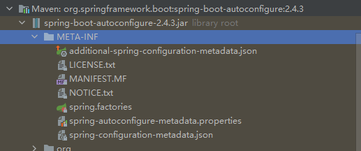
SpringApplication
不简单的方法
我最初以为就是运行了一个main方法，没想到却开启了一个服务；
1 2 3 4 5 6 @SpringBootApplication public class SpringbootApplication { public static void main(String[] args) { SpringApplication.run(SpringbootApplication.class, args); } }
SpringApplication.run分析
分析该方法主要分两部分，一部分是SpringApplication的实例化，二是run方法的执行；
SpringApplication
这个类主要做了以下四件事情：
1 2 3 4 5 6 7 1、推断应用的类型是普通的项目还是Web项目 2、查找并加载所有可用初始化器 ， 设置到initializers属性中 3、找出所有的应用程序监听器，设置到listeners属性中 4、推断并设置main方法的定义类，找到运行的主类
查看构造器：
1 2 3 4 5 6 7 public SpringApplication (ResourceLoader resourceLoader, Class... primarySources) { this .webApplicationType = WebApplicationType.deduceFromClasspath(); this .setInitializers(this .getSpringFactoriesInstances(); this .setListeners(this .getSpringFactoriesInstances(ApplicationListener.class)); this .mainApplicationClass = this .deduceMainApplicationClass(); }
run方法流程分析
3 配置文件:application SpringBoot使用一个全局的配置文件 ， 配置文件名称是固定的
application.properties
application.yml
配置文件的作用 ：修改SpringBoot自动配置的默认值，因为SpringBoot在底层都给我们自动配置好了；
比如我们可以在配置文件中修改Tomcat 默认启动的端口号！测试一下！
3.1 注入配置文件 yaml文件更强大的地方在于，他可以给我们的实体类直接注入匹配值！
yaml注入配置文件
1、在springboot项目中的resources目录下新建一个文件 application.yml
2、编写一个实体类 Dog；
1 2 3 4 5 6 7 8 9 package com.kuang.springboot.pojo;@Component public class Dog { private String name; private Integer age; }
3、思考，我们原来是如何给bean注入属性值的！@Value，给狗狗类测试一下：
1 2 3 4 5 6 7 @Component public class Dog { @Value("阿黄") private String name; @Value("18") private Integer age; }
4、在SpringBoot的测试类下注入狗狗输出一下；
1 2 3 4 5 6 7 8 9 10 11 12 @SpringBootTest class DemoApplicationTests { @Autowired //将狗狗自动注入进来 Dog dog; @Test public void contextLoads() { System.out.println(dog); //打印看下狗狗对象 } }
结果成功输出，@Value注入成功，这是我们原来的办法。
5、我们在编写一个复杂一点的实体类：Person 类
1 2 3 4 5 6 7 8 9 10 11 12 @Component //注册bean到容器中 public class Person { private String name; private Integer age; private Boolean happy; private Date birth; private Map<String,Object> maps; private List<Object> lists; private Dog dog; //有参无参构造、get、set方法、toString()方法 }
6、我们来使用yaml配置的方式进行注入，大家写的时候注意区别和优势，我们编写一个yaml配置！
1 2 3 4 5 6 7 8 9 10 11 12 13 person: name: qinjiang age: 3 happy: false birth: 2000 /01/01 maps: {k1: v1 ,k2: v2 } lists: - code - girl - music dog: name: 旺财 age: 1
7、我们刚才已经把person这个对象的所有值都写好了，我们现在来注入到我们的类中！
1 2 3 4 5 6 7 8 9 10 11 12 13 14 15 16 17 @Component @ConfigurationProperties(prefix = "person") public class Person { private String name; private Integer age; private Boolean happy; private Date birth; private Map<String,Object> maps; private List<Object> lists; private Dog dog; }
8、IDEA 提示，springboot配置注解处理器没有找到，让我们看文档，我们可以查看文档，找到一个依赖！
1 2 3 4 5 6 <dependency > <groupId > org.springframework.boot</groupId > <artifactId > spring-boot-configuration-processor</artifactId > <optional > true</optional > </dependency >
9、确认以上配置都OK之后，我们去测试类中测试一下：
1 2 3 4 5 6 7 8 9 10 11 12 @SpringBootTest class DemoApplicationTests { @Autowired Person person; @Test public void contextLoads () { System.out.println(person); } }
yaml配置注入到实体类完全OK！
3.2 加载指定的配置文件 @PropertySource ：加载指定的配置文件；
@configurationProperties：默认从全局配置文件中获取值；
1、我们去在resources目录下新建一个person.properties文件
2、然后在我们的代码中指定加载person.properties文件
1 2 3 4 5 6 7 8 9 @PropertySource(value = "classpath:person.properties") @Component //注册bean public class Person { @Value("${name}") private String name; ...... }
3、再次输出测试一下：指定配置文件绑定成功！
总结：注入的方式
1 2 3 4 5 6 7 8 1. @Value("v1") 2. @PropertySource @PropertySource(value = "classpath:yangty.properties") @Value("${name}") 3. @configurationProperties @ConfigurationProperties(prefix = "dog")
3.3 配置文件占位符 配置文件还可以编写占位符生成随机数
1 2 3 4 5 6 7 8 9 10 11 12 13 person: name: qinjiang${random.uuid} age: ${random.int} happy: false birth: 2000 /01/01 maps: {k1: v1 ,k2: v2 } lists: - code - girl - music dog: name: ${person.hello:other}_旺财 age: 1
3.4 回顾properties配置 我们上面采用的yaml方法都是最简单的方式，开发中最常用的；也是springboot所推荐的！那我们来唠唠其他的实现方式，道理都是相同的；写还是那样写；配置文件除了yml还有我们之前常用的properties ， 我们没有讲，我们来唠唠！
注意 ：properties配置文件在写中文的时候，会有乱码 ， 我们需要去IDEA中设置编码格式为UTF-8；
settings–>FileEncodings 中配置；
测试步骤：
1、新建一个实体类User
1 2 3 4 5 6 @Component public class User { private String name; private int age; private String sex; }
2、编辑配置文件 user.properties
1 2 3 user1.name =kuangshen user1.age =18 user1.sex =男
3、我们在User类上使用@Value来进行注入！
1 2 3 4 5 6 7 8 9 10 11 @Component @PropertySource(value = "classpath:user.properties") public class User { @Value("${user.name}") private String name; @Value("#{9*2}") private int age; @Value("男") private String sex; }
4、Springboot测试
1 2 3 4 5 6 7 8 9 10 11 12 @SpringBootTest class DemoApplicationTests { @Autowired User user; @Test public void contextLoads () { System.out.println(user); } }
结果正常输出
3.5 对比小结 @Value这个使用起来并不友好！我们需要为每个属性单独注解赋值，比较麻烦；我们来看个功能对比图
1、@ConfigurationProperties只需要写一次即可 ， @Value则需要每个字段都添加
2、松散绑定：这个什么意思呢? 比如我的yml中写的last-name，这个和lastName是一样的， - 后面跟着的字母默认是大写的。这就是松散绑定。可以测试一下
3、JSR303数据校验 ， 这个就是我们可以在字段是增加一层过滤器验证 ， 可以保证数据的合法性
4、复杂类型封装，yml中可以封装对象 ， 使用value就不支持
结论：
配置yml和配置properties都可以获取到值 ， 强烈推荐 yml；
如果我们在某个业务中，只需要获取配置文件中的某个值，可以使用一下 @value；
如果说，我们专门编写了一个JavaBean来和配置文件进行一一映射，就直接@configurationProperties，不要犹豫！
4 JSR303数据校验 Springboot中可以用@validated来校验数据，如果数据异常则会统一抛出异常，方便异常中心统一处理。我们这里来写个注解让我们的name只能支持Email格式；
1 2 3 4 5 <dependency > <groupId > org.springframework.boot</groupId > <artifactId > spring-boot-starter-validation</artifactId > </dependency >
1 2 3 4 5 6 7 8 @Component @ConfigurationProperties(prefix = "person") @Validated public class Person { @Email(message="邮箱格式错误") private String name; }
运行结果 ：default message [不是一个合法的电子邮件地址];
使用数据校验，可以保证数据的正确性 ；
常见参数
1 2 3 4 5 6 7 8 9 10 11 12 13 14 15 16 17 18 19 20 21 22 23 24 25 26 27 28 @NotNull(message="名字不能为空") private String userName;@Max(value=120,message="年龄最大不能查过120") private int age;@Email(message="邮箱格式错误") private String email;空检查 @Null 验证对象是否为null @NotNull 验证对象是否不为null , 无法查检长度为0 的字符串@NotBlank 检查约束字符串是不是Null还有被Trim的长度是否大于0 ,只对字符串,且会去掉前后空格.@NotEmpty 检查约束元素是否为NULL或者是EMPTY. Booelan检查 @AssertTrue 验证 Boolean 对象是否为 true @AssertFalse 验证 Boolean 对象是否为 false 长度检查 @Size(min=, max=) 验证对象（Array,Collection,Map,String）长度是否在给定的范围之内 @Length(min=, max=) string is between min and max included.日期检查 @Past 验证 Date 和 Calendar 对象是否在当前时间之前 @Future 验证 Date 和 Calendar 对象是否在当前时间之后 @Pattern 验证 String 对象是否符合正则表达式的规则.......等等 除此以外，我们还可以自定义一些数据校验规则
5 多环境切换 profile是Spring对不同环境提供不同配置功能的支持，可以通过激活不同的环境版本，实现快速切换环境；
多配置文件
我们在主配置文件编写的时候，文件名可以是 application-{profile}.properties/yml , 用来指定多个环境版本；
例如：
1 2 3 application-test.properties 代表测试环境配置 application-dev.properties 代表开发环境配置
但是Springboot并不会直接启动这些配置文件，它默认使用application.properties主配置文件 ；
我们需要通过一个配置来选择需要激活的环境：
1 2 3 #比如在配置文件中指定使用dev环境，我们可以通过设置不同的端口号进行测试； #我们启动SpringBoot，就可以看到已经切换到dev下的配置了； spring.profiles.active=dev
yaml的多文档块
和properties配置文件中一样，但是使用yml去实现不需要创建多个配置文件，更加方便了 !
1 2 3 4 5 6 7 8 9 10 11 12 13 14 15 16 17 18 19 20 server: port: 8081 #选择要激活那个环境块 spring: profiles: active: prod --- server: port: 8083 spring: profiles: dev #配置环境的名称 --- server: port: 8084 spring: profiles: prod #配置环境的名称
注意：如果yml和properties同时都配置了端口，并且没有激活其他环境 ， 默认会使用properties配置文件的！
配置文件加载位置
外部加载配置文件的方式十分多，我们选择最常用的即可，在开发的资源文件中进行配置！
官方外部配置文件说明参考文档
springboot 启动会扫描以下位置的application.properties或者application.yml文件作为Spring boot的默认配置文件：
1 2 3 4 优先级1：项目路径下的config文件夹配置文件 优先级2：项目路径下配置文件 优先级3：资源路径下的config文件夹配置文件 优先级4：资源路径下配置文件
优先级由高到底，高优先级的配置会覆盖低优先级的配置；
SpringBoot会从这四个位置全部加载主配置文件；互补配置；
拓展，运维小技巧
指定位置加载配置文件
我们还可以通过spring.config.location来改变默认的配置文件位置
5 自动配置原理 以HttpEncodingAutoConfiguration（Http编码自动配置） 为例解释自动配置原理；
1 2 3 4 5 6 7 8 9 10 11 12 13 14 15 16 17 18 19 20 21 22 23 24 25 26 27 28 29 30 31 32 33 34 35 36 37 38 39 40 41 42 43 44 @Configuration @EnableConfigurationProperties({HttpProperties.class}) @ConditionalOnWebApplication(type = Type.SERVLET) @ConditionalOnClass({CharacterEncodingFilter.class}) @ConditionalOnProperty( prefix = "spring.http.encoding", value = {"enabled"}, matchIfMissing = true ) public class HttpEncodingAutoConfiguration { private final Encoding properties; public HttpEncodingAutoConfiguration (HttpProperties properties) { this .properties = properties.getEncoding(); } @Bean @ConditionalOnMissingBean public CharacterEncodingFilter characterEncodingFilter () { CharacterEncodingFilter filter = new OrderedCharacterEncodingFilter (); filter.setEncoding(this .properties.getCharset().name()); filter.setForceRequestEncoding(this .properties.shouldForce(org.springframework.boot.autoconfigure.http.HttpProperties.Encoding.Type.REQUEST)); filter.setForceResponseEncoding(this .properties.shouldForce(org.springframework.boot.autoconfigure.http.HttpProperties.Encoding.Type.RESPONSE)); return filter; } }
一句话总结 ：根据当前不同的条件判断，决定这个配置类是否生效！
一但这个配置类生效；这个配置类就会给容器中添加各种组件
这些组件的属性是从对应的properties类中获取的，这些类里面的每一个属性又是和配置文件绑定的； 这样就可以形成我们的配置文件可以动态的修改springboot的内容 所有在配置文件中能配置的属性都是在xxxxProperties类中封装着 配置文件能配置什么就可以参照某个功能对应的这个属性类
通俗理解：把我们原先需要在bean中手打的属性（property）封装成了一个类，然后通过yaml文件进行自动注入，而我们也可以在application.yaml文件中对这些property进行赋值。
1 2 3 4 5 @ConfigurationProperties(prefix = "spring.http") public class HttpProperties { }
我们去配置文件里面试试前缀，看提示！
精髓
1.SpringBoot启动时会加载大量的自动配置类 2.我们看我们需要的功能有没有在SpringBoot默认写好的自动配置类当中 3.我们再来看这个自动配置类中到底配置了哪些组件；（只要我们要用的组件存在其中，我们就不需要再去手动配置了，如果不存在我们再手动配置） 4.给容器中自动配置类添加组件的时候，会从properties类中获取某些属性，我们只需要在配置文件中指定这些属性即可；
XXXXAutoConfiguration：自动配置类:给容器添加组件，这些组件要赋值就需要绑定一个XXXXProperties类
1 2 3 4 5 6 7 8 9 10 11 12 13 14 15 16 17 18 19 20 21 22 23 24 25 26 27 28 29 30 31 32 33 34 35 36 37 38 39 40 41 42 43 44 45 46 47 48 49 50 51 52 53 54 55 56 57 58 59 60 61 62 63 64 65 66 67 68 69 70 71 72 73 74 75 76 77 78 79 80 81 82 83 84 85 86 87 88 89 90 91 92 93 94 95 96 97 98 99 100 101 102 103 104 105 106 107 108 109 110 111 112 113 114 115 116 117 118 119 120 121 122 123 124 125 126 127 128 129 130 131 132 133 134 135 136 137 138 139 140 141 142 143 144 145 146 147 148 149 150 151 152 153 154 155 156 157 158 159 160 161 162 163 164 165 166 167 168 169 # Initializers org.springframework.context.ApplicationContextInitializer=\ org.springframework.boot.autoconfigure.SharedMetadataReaderFactoryContextInitializer,\ org.springframework.boot.autoconfigure.logging.ConditionEvaluationReportLoggingListener # Application Listeners org.springframework.context.ApplicationListener=\ org.springframework.boot.autoconfigure.BackgroundPreinitializer # Auto Configuration Import Listeners org.springframework.boot.autoconfigure.AutoConfigurationImportListener=\ org.springframework.boot.autoconfigure.condition.ConditionEvaluationReportAutoConfigurationImportListener # Auto Configuration Import Filters org.springframework.boot.autoconfigure.AutoConfigurationImportFilter=\ org.springframework.boot.autoconfigure.condition.OnBeanCondition,\ org.springframework.boot.autoconfigure.condition.OnClassCondition,\ org.springframework.boot.autoconfigure.condition.OnWebApplicationCondition # Auto Configure org.springframework.boot.autoconfigure.EnableAutoConfiguration=\ org.springframework.boot.autoconfigure.admin.SpringApplicationAdminJmxAutoConfiguration,\ org.springframework.boot.autoconfigure.aop.AopAutoConfiguration,\ org.springframework.boot.autoconfigure.amqp.RabbitAutoConfiguration,\ org.springframework.boot.autoconfigure.batch.BatchAutoConfiguration,\ org.springframework.boot.autoconfigure.cache.CacheAutoConfiguration,\ org.springframework.boot.autoconfigure.cassandra.CassandraAutoConfiguration,\ org.springframework.boot.autoconfigure.context.ConfigurationPropertiesAutoConfiguration,\ org.springframework.boot.autoconfigure.context.LifecycleAutoConfiguration,\ org.springframework.boot.autoconfigure.context.MessageSourceAutoConfiguration,\ org.springframework.boot.autoconfigure.context.PropertyPlaceholderAutoConfiguration,\ org.springframework.boot.autoconfigure.couchbase.CouchbaseAutoConfiguration,\ org.springframework.boot.autoconfigure.dao.PersistenceExceptionTranslationAutoConfiguration,\ org.springframework.boot.autoconfigure.data.cassandra.CassandraDataAutoConfiguration,\ org.springframework.boot.autoconfigure.data.cassandra.CassandraReactiveDataAutoConfiguration,\ org.springframework.boot.autoconfigure.data.cassandra.CassandraReactiveRepositoriesAutoConfiguration,\ org.springframework.boot.autoconfigure.data.cassandra.CassandraRepositoriesAutoConfiguration,\ org.springframework.boot.autoconfigure.data.couchbase.CouchbaseDataAutoConfiguration,\ org.springframework.boot.autoconfigure.data.couchbase.CouchbaseReactiveDataAutoConfiguration,\ org.springframework.boot.autoconfigure.data.couchbase.CouchbaseReactiveRepositoriesAutoConfiguration,\ org.springframework.boot.autoconfigure.data.couchbase.CouchbaseRepositoriesAutoConfiguration,\ org.springframework.boot.autoconfigure.data.elasticsearch.ElasticsearchDataAutoConfiguration,\ org.springframework.boot.autoconfigure.data.elasticsearch.ElasticsearchRepositoriesAutoConfiguration,\ org.springframework.boot.autoconfigure.data.elasticsearch.ReactiveElasticsearchRepositoriesAutoConfiguration,\ org.springframework.boot.autoconfigure.data.elasticsearch.ReactiveElasticsearchRestClientAutoConfiguration,\ org.springframework.boot.autoconfigure.data.jdbc.JdbcRepositoriesAutoConfiguration,\ org.springframework.boot.autoconfigure.data.jpa.JpaRepositoriesAutoConfiguration,\ org.springframework.boot.autoconfigure.data.ldap.LdapRepositoriesAutoConfiguration,\ org.springframework.boot.autoconfigure.data.mongo.MongoDataAutoConfiguration,\ org.springframework.boot.autoconfigure.data.mongo.MongoReactiveDataAutoConfiguration,\ org.springframework.boot.autoconfigure.data.mongo.MongoReactiveRepositoriesAutoConfiguration,\ org.springframework.boot.autoconfigure.data.mongo.MongoRepositoriesAutoConfiguration,\ org.springframework.boot.autoconfigure.data.neo4j.Neo4jDataAutoConfiguration,\ org.springframework.boot.autoconfigure.data.neo4j.Neo4jReactiveDataAutoConfiguration,\ org.springframework.boot.autoconfigure.data.neo4j.Neo4jReactiveRepositoriesAutoConfiguration,\ org.springframework.boot.autoconfigure.data.neo4j.Neo4jRepositoriesAutoConfiguration,\ org.springframework.boot.autoconfigure.data.solr.SolrRepositoriesAutoConfiguration,\ org.springframework.boot.autoconfigure.data.r2dbc.R2dbcDataAutoConfiguration,\ org.springframework.boot.autoconfigure.data.r2dbc.R2dbcRepositoriesAutoConfiguration,\ org.springframework.boot.autoconfigure.data.redis.RedisAutoConfiguration,\ org.springframework.boot.autoconfigure.data.redis.RedisReactiveAutoConfiguration,\ org.springframework.boot.autoconfigure.data.redis.RedisRepositoriesAutoConfiguration,\ org.springframework.boot.autoconfigure.data.rest.RepositoryRestMvcAutoConfiguration,\ org.springframework.boot.autoconfigure.data.web.SpringDataWebAutoConfiguration,\ org.springframework.boot.autoconfigure.elasticsearch.ElasticsearchRestClientAutoConfiguration,\ org.springframework.boot.autoconfigure.flyway.FlywayAutoConfiguration,\ org.springframework.boot.autoconfigure.freemarker.FreeMarkerAutoConfiguration,\ org.springframework.boot.autoconfigure.groovy.template.GroovyTemplateAutoConfiguration,\ org.springframework.boot.autoconfigure.gson.GsonAutoConfiguration,\ org.springframework.boot.autoconfigure.h2.H2ConsoleAutoConfiguration,\ org.springframework.boot.autoconfigure.hateoas.HypermediaAutoConfiguration,\ org.springframework.boot.autoconfigure.hazelcast.HazelcastAutoConfiguration,\ org.springframework.boot.autoconfigure.hazelcast.HazelcastJpaDependencyAutoConfiguration,\ org.springframework.boot.autoconfigure.http.HttpMessageConvertersAutoConfiguration,\ org.springframework.boot.autoconfigure.http.codec.CodecsAutoConfiguration,\ org.springframework.boot.autoconfigure.influx.InfluxDbAutoConfiguration,\ org.springframework.boot.autoconfigure.info.ProjectInfoAutoConfiguration,\ org.springframework.boot.autoconfigure.integration.IntegrationAutoConfiguration,\ org.springframework.boot.autoconfigure.jackson.JacksonAutoConfiguration,\ org.springframework.boot.autoconfigure.jdbc.DataSourceAutoConfiguration,\ org.springframework.boot.autoconfigure.jdbc.JdbcTemplateAutoConfiguration,\ org.springframework.boot.autoconfigure.jdbc.JndiDataSourceAutoConfiguration,\ org.springframework.boot.autoconfigure.jdbc.XADataSourceAutoConfiguration,\ org.springframework.boot.autoconfigure.jdbc.DataSourceTransactionManagerAutoConfiguration,\ org.springframework.boot.autoconfigure.jms.JmsAutoConfiguration,\ org.springframework.boot.autoconfigure.jmx.JmxAutoConfiguration,\ org.springframework.boot.autoconfigure.jms.JndiConnectionFactoryAutoConfiguration,\ org.springframework.boot.autoconfigure.jms.activemq.ActiveMQAutoConfiguration,\ org.springframework.boot.autoconfigure.jms.artemis.ArtemisAutoConfiguration,\ org.springframework.boot.autoconfigure.jersey.JerseyAutoConfiguration,\ org.springframework.boot.autoconfigure.jooq.JooqAutoConfiguration,\ org.springframework.boot.autoconfigure.jsonb.JsonbAutoConfiguration,\ org.springframework.boot.autoconfigure.kafka.KafkaAutoConfiguration,\ org.springframework.boot.autoconfigure.availability.ApplicationAvailabilityAutoConfiguration,\ org.springframework.boot.autoconfigure.ldap.embedded.EmbeddedLdapAutoConfiguration,\ org.springframework.boot.autoconfigure.ldap.LdapAutoConfiguration,\ org.springframework.boot.autoconfigure.liquibase.LiquibaseAutoConfiguration,\ org.springframework.boot.autoconfigure.mail.MailSenderAutoConfiguration,\ org.springframework.boot.autoconfigure.mail.MailSenderValidatorAutoConfiguration,\ org.springframework.boot.autoconfigure.mongo.embedded.EmbeddedMongoAutoConfiguration,\ org.springframework.boot.autoconfigure.mongo.MongoAutoConfiguration,\ org.springframework.boot.autoconfigure.mongo.MongoReactiveAutoConfiguration,\ org.springframework.boot.autoconfigure.mustache.MustacheAutoConfiguration,\ org.springframework.boot.autoconfigure.neo4j.Neo4jAutoConfiguration,\ org.springframework.boot.autoconfigure.orm.jpa.HibernateJpaAutoConfiguration,\ org.springframework.boot.autoconfigure.quartz.QuartzAutoConfiguration,\ org.springframework.boot.autoconfigure.r2dbc.R2dbcAutoConfiguration,\ org.springframework.boot.autoconfigure.r2dbc.R2dbcTransactionManagerAutoConfiguration,\ org.springframework.boot.autoconfigure.rsocket.RSocketMessagingAutoConfiguration,\ org.springframework.boot.autoconfigure.rsocket.RSocketRequesterAutoConfiguration,\ org.springframework.boot.autoconfigure.rsocket.RSocketServerAutoConfiguration,\ org.springframework.boot.autoconfigure.rsocket.RSocketStrategiesAutoConfiguration,\ org.springframework.boot.autoconfigure.security.servlet.SecurityAutoConfiguration,\ org.springframework.boot.autoconfigure.security.servlet.UserDetailsServiceAutoConfiguration,\ org.springframework.boot.autoconfigure.security.servlet.SecurityFilterAutoConfiguration,\ org.springframework.boot.autoconfigure.security.reactive.ReactiveSecurityAutoConfiguration,\ org.springframework.boot.autoconfigure.security.reactive.ReactiveUserDetailsServiceAutoConfiguration,\ org.springframework.boot.autoconfigure.security.rsocket.RSocketSecurityAutoConfiguration,\ org.springframework.boot.autoconfigure.security.saml2.Saml2RelyingPartyAutoConfiguration,\ org.springframework.boot.autoconfigure.sendgrid.SendGridAutoConfiguration,\ org.springframework.boot.autoconfigure.session.SessionAutoConfiguration,\ org.springframework.boot.autoconfigure.security.oauth2.client.servlet.OAuth2ClientAutoConfiguration,\ org.springframework.boot.autoconfigure.security.oauth2.client.reactive.ReactiveOAuth2ClientAutoConfiguration,\ org.springframework.boot.autoconfigure.security.oauth2.resource.servlet.OAuth2ResourceServerAutoConfiguration,\ org.springframework.boot.autoconfigure.security.oauth2.resource.reactive.ReactiveOAuth2ResourceServerAutoConfiguration,\ org.springframework.boot.autoconfigure.solr.SolrAutoConfiguration,\ org.springframework.boot.autoconfigure.task.TaskExecutionAutoConfiguration,\ org.springframework.boot.autoconfigure.task.TaskSchedulingAutoConfiguration,\ org.springframework.boot.autoconfigure.thymeleaf.ThymeleafAutoConfiguration,\ org.springframework.boot.autoconfigure.transaction.TransactionAutoConfiguration,\ org.springframework.boot.autoconfigure.transaction.jta.JtaAutoConfiguration,\ org.springframework.boot.autoconfigure.validation.ValidationAutoConfiguration,\ org.springframework.boot.autoconfigure.web.client.RestTemplateAutoConfiguration,\ org.springframework.boot.autoconfigure.web.embedded.EmbeddedWebServerFactoryCustomizerAutoConfiguration,\ org.springframework.boot.autoconfigure.web.reactive.HttpHandlerAutoConfiguration,\ org.springframework.boot.autoconfigure.web.reactive.ReactiveWebServerFactoryAutoConfiguration,\ org.springframework.boot.autoconfigure.web.reactive.WebFluxAutoConfiguration,\ org.springframework.boot.autoconfigure.web.reactive.error.ErrorWebFluxAutoConfiguration,\ org.springframework.boot.autoconfigure.web.reactive.function.client.ClientHttpConnectorAutoConfiguration,\ org.springframework.boot.autoconfigure.web.reactive.function.client.WebClientAutoConfiguration,\ org.springframework.boot.autoconfigure.web.servlet.DispatcherServletAutoConfiguration,\ org.springframework.boot.autoconfigure.web.servlet.ServletWebServerFactoryAutoConfiguration,\ org.springframework.boot.autoconfigure.web.servlet.error.ErrorMvcAutoConfiguration,\ org.springframework.boot.autoconfigure.web.servlet.HttpEncodingAutoConfiguration,\ org.springframework.boot.autoconfigure.web.servlet.MultipartAutoConfiguration,\ org.springframework.boot.autoconfigure.web.servlet.WebMvcAutoConfiguration,\ org.springframework.boot.autoconfigure.websocket.reactive.WebSocketReactiveAutoConfiguration,\ org.springframework.boot.autoconfigure.websocket.servlet.WebSocketServletAutoConfiguration,\ org.springframework.boot.autoconfigure.websocket.servlet.WebSocketMessagingAutoConfiguration,\ org.springframework.boot.autoconfigure.webservices.WebServicesAutoConfiguration,\ org.springframework.boot.autoconfigure.webservices.client.WebServiceTemplateAutoConfiguration # Failure analyzers org.springframework.boot.diagnostics.FailureAnalyzer=\ org.springframework.boot.autoconfigure.data.redis.RedisUrlSyntaxFailureAnalyzer,\ org.springframework.boot.autoconfigure.diagnostics.analyzer.NoSuchBeanDefinitionFailureAnalyzer,\ org.springframework.boot.autoconfigure.flyway.FlywayMigrationScriptMissingFailureAnalyzer,\ org.springframework.boot.autoconfigure.jdbc.DataSourceBeanCreationFailureAnalyzer,\ org.springframework.boot.autoconfigure.jdbc.HikariDriverConfigurationFailureAnalyzer,\ org.springframework.boot.autoconfigure.r2dbc.ConnectionFactoryBeanCreationFailureAnalyzer,\ org.springframework.boot.autoconfigure.session.NonUniqueSessionRepositoryFailureAnalyzer # Template availability providers org.springframework.boot.autoconfigure.template.TemplateAvailabilityProvider=\ org.springframework.boot.autoconfigure.freemarker.FreeMarkerTemplateAvailabilityProvider,\ org.springframework.boot.autoconfigure.mustache.MustacheTemplateAvailabilityProvider,\ org.springframework.boot.autoconfigure.groovy.template.GroovyTemplateAvailabilityProvider,\ org.springframework.boot.autoconfigure.thymeleaf.ThymeleafTemplateAvailabilityProvider,\ org.springframework.boot.autoconfigure.web.servlet.JspTemplateAvailabilityProvider
XXXXProperties：里面封装配置文件中相关属性；
怎么去修改这些属性呢：说白了就是SpringBoot配置，—->.yaml、.properties这些文件
了解：@Conditional
了解完自动装配的原理后，我们来关注一个细节问题，*自动配置类必须在一定的条件下才能生效；
@Conditional派生注解（Spring注解版原生的@Conditional作用）
作用：必须是@Conditional指定的条件成立，才给容器中添加组件，配置配里面的所有内容才生效；
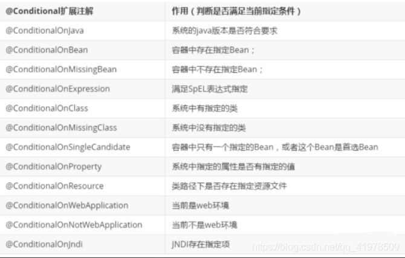
那么多的自动配置类，必须在一定的条件下才能生效；也就是说，我们加载了这么多的配置类，但不是所有的都生效了。
我们怎么知道哪些自动配置类生效？
我们可以通过启用 debug=true属性；来让控制台打印自动配置报告，这样我们就可以很方便的知道哪些自动配置类生效；
Positive matches:（自动配置类启用的：正匹配）
Negative matches:（没有启动，没有匹配成功的自动配置类：负匹配）
Unconditional classes: （没有条件的类）
6 自定义starter 说明
启动器模块是一个 空 jar 文件，仅提供辅助性依赖管理，这些依赖可能用于自动装配或者其他类库
命名归约：
官方命名：
1 2 3 前缀：spring-boot-starter-xxx 比如：spring-boot-starter-web....
自定义命名：
1 2 3 xxx-spring-boot-starter 比如：mybatis-spring-boot-starter
编写启动器
1、在IDEA中新建一个空项目 spring-boot-starter-diy
2、新建一个普通Maven模块：yang-spring-boot-starter
3、新建一个Springboot模块：yang-spring-boot-starter-autoconfigure
4、点击apply即可，基本结构
5、在我们的 starter 中 导入 autoconfigure 的依赖！
1 2 3 4 5 6 7 8 9 <!-- 启动器 --> <dependencies> <!-- 引入自动配置模块 --> <dependency> <groupId>com.yang</groupId> <artifactId>yang-spring-boot-starter-autoconfigure</artifactId> <version>0.0.1-SNAPSHOT</version> </dependency> </dependencies>
6、将 autoconfigure 项目下多余的文件都删掉，Pom中只留下一个 starter，这是所有的启动器基本配置！
7、我们编写一个自己的服务
1 2 3 4 5 6 7 8 9 10 11 12 13 14 15 16 17 18 19 package com.yang; public class HelloService { HelloProperties helloProperties; public HelloProperties getHelloProperties() { return helloProperties; } public void setHelloProperties(HelloProperties helloProperties) { this.helloProperties = helloProperties; } public String sayHello(String name){ return helloProperties.getPrefix() + name + helloProperties.getSuffix(); } }
8、编写HelloProperties 配置类
1 2 3 4 5 6 7 8 9 10 11 12 13 14 15 16 17 18 19 20 21 22 23 24 25 26 27 package com.yang; import org.springframework.boot.context.properties.ConfigurationProperties; // 前缀 yang.hello @ConfigurationProperties(prefix = "kuang.hello") public class HelloProperties { private String prefix; private String suffix; public String getPrefix() { return prefix; } public void setPrefix(String prefix) { this.prefix = prefix; } public String getSuffix() { return suffix; } public void setSuffix(String suffix) { this.suffix = suffix; } }
9、编写我们的自动配置类并注入bean，测试！
1 2 3 4 5 6 7 8 9 10 11 12 13 14 15 16 17 18 19 20 21 22 23 24 package com.yang; import org.springframework.beans.factory.annotation.Autowired; import org.springframework.boot.autoconfigure.condition.ConditionalOnWebApplication; import org.springframework.boot.context.properties.EnableConfigurationProperties; import org.springframework.context.annotation.Bean; import org.springframework.context.annotation.Configuration; @Configuration @ConditionalOnWebApplication //web应用生效 @EnableConfigurationProperties(HelloProperties.class) public class HelloServiceAutoConfiguration { @Autowired HelloProperties helloProperties; @Bean public HelloService helloService(){ HelloService service = new HelloService(); service.setHelloProperties(helloProperties); return service; } }
10、在resources编写一个自己的 META-INF\spring.factories
1 2 3 # Auto Configure org.springframework.boot.autoconfigure.EnableAutoConfiguration=\ com.yang.HelloServiceAutoConfiguration
11、编写完成后，可以安装到maven仓库中！
新建项目测试我们自己写的启动器
1、新建一个SpringBoot 项目
2、导入我们自己写的启动器
1 2 3 4 5 <dependency> <groupId>com.kuang</groupId> <artifactId>kuang-spring-boot-starter</artifactId> <version>1.0-SNAPSHOT</version> </dependency>
3、编写一个 HelloController 进行测试我们自己的写的接口！
1 2 3 4 5 6 7 8 9 10 11 12 13 14 package com.yang.controller; @RestController public class HelloController { @Autowired HelloService helloService; @RequestMapping("/hello") public String hello(){ return helloService.sayHello("zxc"); } }
4、编写配置文件 application.properties
1 2 yang.hello.prefix="ppp" yang.hello.suffix="sss"
5、启动项目进行测试，结果成功 !
7 SpringBoot Web开发总览 在之前我们的项目都是以jar包结尾的，没有放webapp的地方。
1.创建应用，选择模块导入starter，只需要专注于业务代码
springboot到底帮我们配置了什么，我们能不能修改？能修改哪些东西？能不能扩展
xxxAutoConfiguration：向容器中自动配置组件 xxxProperties：自动配置类，装配配置文件中自定义的一些内容
导入静态资源html，css，js
7.1 Web开发静态资源处理
静态资源映射规则
首先，我们搭建一个普通的SpringBoot项目，回顾一下HelloWorld程序！
写请求非常简单，那我们要引入我们前端资源，我们项目中有许多的静态资源，比如css，js等文件，这个SpringBoot怎么处理呢？
如果我们是一个web应用，我们的main下会有一个webapp，我们以前都是将所有的页面导在这里面的，对吧！但是我们现在的pom呢，打包方式是为jar的方式，那么这种方式SpringBoot能不能来给我们写页面呢？当然是可以的，但是SpringBoot对于静态资源放置的位置，是有规定的！
我们先来聊聊这个静态资源映射规则：
SpringBoot中，SpringMVC的web配置都在 WebMvcAutoConfiguration 这个配置类里面
我们可以去看看 WebMvcAutoConfigurationAdapter 中有很多配置方法；
有一个方法：addResourceHandlers 添加资源处理
1 2 3 4 5 6 7 8 9 10 11 12 13 14 15 16 17 18 19 20 21 22 23 24 @Override public void addResourceHandlers (ResourceHandlerRegistry registry) { if (!this .resourceProperties.isAddMappings()) { logger.debug("Default resource handling disabled" ); return ; } Duration cachePeriod = this .resourceProperties.getCache().getPeriod(); CacheControl cacheControl = this .resourceProperties.getCache().getCachecontrol().toHttpCacheControl(); if (!registry.hasMappingForPattern("/webjars/**" )) { customizeResourceHandlerRegistration(registry.addResourceHandler("/webjars/**" ) .addResourceLocations("classpath:/META-INF/resources/webjars/" ) .setCachePeriod(getSeconds(cachePeriod)).setCacheControl(cacheControl)); } String staticPathPattern = this .mvcProperties.getStaticPathPattern(); if (!registry.hasMappingForPattern(staticPathPattern)) { customizeResourceHandlerRegistration(registry.addResourceHandler(staticPathPattern) .addResourceLocations(getResourceLocations(this .resourceProperties.getStaticLocations())) .setCachePeriod(getSeconds(cachePeriod)).setCacheControl(cacheControl)); } }
第一种静态资源映射规则
读一下源代码：比如所有的 /webjars/** ， 都需要去 classpath:/META-INF/resources/webjars/ 找对应的资源；
什么是webjars 呢？
Webjars本质就是以jar包的方式引入我们的静态资源 ， 我们以前要导入一个静态资源文件，直接导入即可。
使用SpringBoot需要使用Webjars，我们可以去搜索一下：
网站：https://www.webjars.org
要使用jQuery，我们只要要引入jQuery对应版本的pom依赖即可！
1 2 3 4 5 6 <dependency > <groupId > org.webjars</groupId > <artifactId > jquery</artifactId > <version > 3.6.0</version > </dependency >
导入完毕，查看webjars目录结构，并访问Jquery.js文件！
访问：只要是静态资源，SpringBoot就会去对应的路径寻找资源，我们这里访问：http://localhost:8080/webjars/jquery/3.4.1/jquery.js
第二种静态资源映射规则
那我们项目中要是使用自己的静态资源该怎么导入呢？我们看下一行代码；
我们去找staticPathPattern发现第二种映射规则 ：/** , 访问当前的项目任意资源，它会去找 resourceProperties 这个类，我们可以点进去看一下分析：
1 2 3 4 5 6 7 8 9 10 11 12 13 public String[] getStaticLocations() { return this .staticLocations; } private String[] staticLocations = CLASSPATH_RESOURCE_LOCATIONS;private static final String[] CLASSPATH_RESOURCE_LOCATIONS = { "classpath:/META-INF/resources/" , "classpath:/resources/" , "classpath:/static/" , "classpath:/public/" };
ResourceProperties 可以设置和我们静态资源有关的参数；这里面指向了它会去寻找资源的文件夹，即上面数组的内容。
所以得出结论，以下四个目录存放的静态资源可以被我们识别：
1 2 3 4 "classpath:/META-INF/resources/" "classpath:/resources/" "classpath:/static/" "classpath:/public/"
我们可以在resources根目录下新建对应的文件夹，都可以存放我们的静态文件；
比如我们访问 http://localhost:8080/1.js , 他就会去这些文件夹中寻找对应的静态资源文件；
自定义静态资源路径
我们也可以自己通过配置文件来指定一下，哪些文件夹是需要我们放静态资源文件的，在application.properties中配置；
1 spring.resources.static-locations =classpath:/coding/,classpath:/yang/
一旦自己定义了静态文件夹的路径，原来的自动配置就都会失效了！
7.2 首页处理 静态资源文件夹说完后，我们继续向下看源码！可以看到一个欢迎页的映射，就是我们的首页！
1 2 3 4 5 6 7 8 9 10 @Bean public WelcomePageHandlerMapping welcomePageHandlerMapping (ApplicationContext applicationContext, FormattingConversionService mvcConversionService, ResourceUrlProvider mvcResourceUrlProvider) { WelcomePageHandlerMapping welcomePageHandlerMapping = new WelcomePageHandlerMapping ( new TemplateAvailabilityProviders (applicationContext), applicationContext, getWelcomePage(), this .mvcProperties.getStaticPathPattern()); welcomePageHandlerMapping.setInterceptors(getInterceptors(mvcConversionService, mvcResourceUrlProvider)); return welcomePageHandlerMapping; }
点进去继续看
1 2 3 4 5 6 7 8 9 10 11 12 private Optional<Resource> getWelcomePage () { String[] locations = getResourceLocations(this .resourceProperties.getStaticLocations()); return Arrays.stream(locations).map(this ::getIndexHtml).filter(this ::isReadable).findFirst(); } private Resource getIndexHtml (String location) { return this .resourceLoader.getResource(location + "index.html" ); }
欢迎页，静态资源文件夹下的所有 index.html 页面；被 /** 映射。
比如我访问 http://localhost:8080/ ，就会找静态资源文件夹下的 index.html
新建一个 index.html ，在我们上面的3个目录中任意一个；然后访问测试 http://localhost:8080/ 看结果！
1、关闭SpringBoot默认图标
1 2 spring.mvc.favicon.enabled =false
2、自己放一个图标在静态资源目录下，我放在 public 目录下
3、清除浏览器缓存！刷新网页，发现图标已经变成自己的了！
8 Thymeleaf模板引擎 8.1模板引擎 前端交给我们的页面，是html页面。如果是我们以前开发，我们需要把他们转成jsp页面，jsp好处就是当我们查出一些数据转发到JSP页面以后，我们可以用jsp轻松实现数据的显示，及交互等。
jsp支持非常强大的功能，包括能写Java代码，但是呢，我们现在的这种情况，SpringBoot这个项目首先是以jar的方式，不是war，像第二，我们用的还是嵌入式的Tomcat，所以呢，他现在默认是不支持jsp的。
那不支持jsp，如果我们直接用纯静态页面的方式，那给我们开发会带来非常大的麻烦，那怎么办呢？
SpringBoot推荐你可以来使用模板引擎：
模板引擎，我们其实大家听到很多，其实jsp就是一个模板引擎，还有用的比较多的freemarker，包括SpringBoot给我们推荐的Thymeleaf，模板引擎有非常多，但再多的模板引擎，他们的思想都是一样的，什么样一个思想呢我们来看一下这张图：
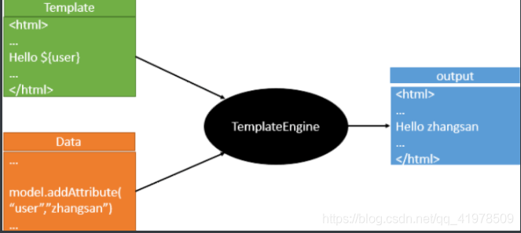
模板引擎的作用就是我们来写一个页面模板，比如有些值呢，是动态的，我们写一些表达式。而这些值，从哪来呢，就是我们在后台封装一些数据。然后把这个模板和这个数据交给我们模板引擎，模板引擎按照我们这个数据帮你把这表达式解析、填充到我们指定的位置，然后把这个数据最终生成一个我们想要的内容给我们写出去，这就是我们这个模板引擎，不管是jsp还是其他模板引擎，都是这个思想。只不过呢，就是说不同模板引擎之间，他们可能这个语法有点不一样。其他的我就不介绍了，我主要来介绍一下SpringBoot给我们推荐的Thymeleaf模板引擎，这模板引擎呢，是一个高级语言的模板引擎，他的这个语法更简单。而且呢，功能更强大。
我们呢，就来看一下这个模板引擎，那既然要看这个模板引擎。首先，我们来看SpringBoot里边怎么用
8.2 引入Thymeleaf 怎么引入呢，对于springboot来说，什么事情不都是一个start的事情嘛，我们去在项目中引入一下。给大家三个网址：
Thymeleaf 官网：https://www.thymeleaf.org/
Thymeleaf 在Github 的主页：https://github.com/thymeleaf/thymeleaf
Spring官方文档：找到我们对应的版本
https://docs.spring.io/spring-boot/docs/2.2.5.RELEASE/reference/htmlsingle/#using-boot-starter
找到对应的pom依赖：可以适当点进源码看下本来的包！
1 2 3 4 5 <dependency > <groupId > org.springframework.boot</groupId > <artifactId > spring-boot-starter-thymeleaf</artifactId > </dependency >
Maven会自动下载jar包，我们可以去看下下载的东西；
8.3 Thymeleaf分析 前面呢，我们已经引入了Thymeleaf，那这个要怎么使用呢？
我们首先得按照SpringBoot的自动配置原理看一下我们这个Thymeleaf的自动配置规则，在按照那个规则，我们进行使用。
我们去找一下Thymeleaf的自动配置类：ThymeleafProperties
1 2 3 4 5 6 7 8 9 10 11 12 @ConfigurationProperties(prefix = "spring.thymeleaf") public class ThymeleafProperties { private static final Charset DEFAULT_ENCODING; public static final String DEFAULT_PREFIX = "classpath:/templates/" ; public static final String DEFAULT_SUFFIX = ".html" ; private boolean checkTemplate = true ; private boolean checkTemplateLocation = true ; private String prefix = "classpath:/templates/" ; private String suffix = ".html" ; private String mode = "HTML" ; private Charset encoding; }
我们可以在其中看到默认的前缀和后缀！
我们只需要把我们的html页面放在类路径下的templates下，thymeleaf就可以帮我们自动渲染了。
使用thymeleaf什么都不需要配置，只需要将他放在指定的文件夹下即可！
测试
1、编写一个TestController
1 2 3 4 5 6 7 @Controller public class TestController { @RequestMapping("/t1") public String test1 () { return "test" ; }
2、编写一个测试页面 test.html 放在 templates 目录下
1 2 3 4 5 6 7 8 9 10 <!DOCTYPE html > <html lang ="en" > <head > <meta charset ="UTF-8" > <title > Title</title > </head > <body > <h1 > test</h1 > </body > </html >
3、启动项目请求测试
8.4 Thymeleaf 语法学习 要学习语法，还是参考官网文档最为准确，我们找到对应的版本看一下；
Thymeleaf 官网：https://www.thymeleaf.org/ ， 简单看一下官网！我们去下载Thymeleaf的官方文档！
1、修改测试请求，增加数据传输；
1 2 3 4 5 6 7 @RequestMapping("/t1") public String test1 (Model model) { model.addAttribute("msg" ,"Hello,Thymeleaf" ); return "test" ; }
2、我们要使用thymeleaf，需要在html文件中导入命名空间的约束，方便提示。
我们可以去官方文档的#3中看一下命名空间拿来过来：
1 xmlns:th="http://www.thymeleaf.org"
3、我们去编写下前端页面
1 2 3 4 5 6 7 8 9 10 11 12 13 <!DOCTYPE html > <html lang ="en" xmlns:th ="http://www.thymeleaf.org" > <head > <meta charset ="UTF-8" > <title > Guo</title > </head > <body > <h1 > 测试页面</h1 > <div th:text ="${msg}" > </div > </body > </html >
1、我们可以使用任意的 th:attr 来替换Html中原生属性的值！
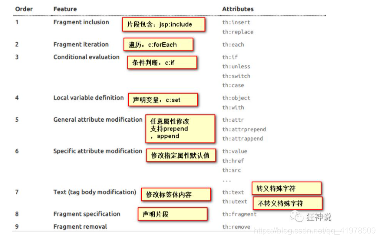
2、我们能写哪些表达式呢？
1 2 3 4 5 6 7 8 9 10 11 12 13 14 15 16 17 18 19 20 21 22 23 24 25 26 27 28 29 30 31 32 33 34 35 36 37 38 39 40 41 42 43 44 45 46 47 48 49 50 51 52 53 54 55 56 57 58 59 60 61 62 63 64 Simple expressions:（表达式语法） Variable Expressions: ${...}：获取变量值；OGNL； 1 ）、获取对象的属性、调用方法 2 ）、使用内置的基本对象：#18 3 ）、内置的一些工具对象： ================================================================================== Selection Variable Expressions: *{...}：选择表达式：和${}在功能上是一样； Message Expressions: Link URL Expressions: @{...}：定义URL； Fragment Expressions: ~{...}：片段引用表达式 Literals（字面量） Text literals: 'one text' , 'Another one!' ,… Number literals: 0 , 34 , 3.0 , 12.3 ,… Boolean literals: true , false Null literal: null Literal tokens: one , sometext , main ,… Text operations:（文本操作） String concatenation: + Literal substitutions: |The name is ${name}| Arithmetic operations:（数学运算） Binary operators: + , - , * , / , % Minus sign (unary operator): - Boolean operations:（布尔运算） Binary operators: and , or Boolean negation (unary operator): ! , not Comparisons and equality:（比较运算） Comparators: > , < , >= , <= ( gt , lt , ge , le ) Equality operators: == , != ( eq , ne ) Conditional operators:条件运算（三元运算符） If-then: (if) ? (then) If-then-else: (if) ? (then) : (else) Default: (value) ?: (defaultvalue) Special tokens: No-Operation: _
练习测试：
1、 我们编写一个Controller，放一些数据
1 2 3 4 5 6 7 8 @RequestMapping("/t2") public String test2 (Map<String,Object> map) { map.put("msg" ,"<h1>Hello</h1>" ); map.put("users" , Arrays.asList("yang" ,"shen" )); return "test" ; }
2、测试页面取出数据
1 2 3 4 5 6 7 8 9 10 11 12 13 14 15 16 17 18 19 20 21 22 23 24 <!DOCTYPE html > <html lang ="en" xmlns:th ="http://www.thymeleaf.org" > <head > <meta charset ="UTF-8" > <title > title</title > </head > <body > <h1 > 测试页面</h1 > <div th:text ="${msg}" > </div > <div th:utext ="${msg}" > </div > <h4 th:each ="user :${users}" th:text ="${user}" > </h4 > <h4 > <span th:each ="user:${users}" > [[${user}]]</span > </h4 > </body > </html >
9 SpringMVC自动配置原理 9.1 自动配置原理 Spring MVC Auto-configuration
Spring Boot provides auto-configuration for Spring MVC that works well with most applications.
The auto-configuration adds the following features on top of Spring’s defaults:
Inclusion of ContentNegotiatingViewResolver and BeanNameViewResolver beans.
Support for serving static resources, including support for WebJars (covered later in this document )).
Automatic registration of Converter, GenericConverter, and Formatter beans.
Support for HttpMessageConverters (covered later in this document ).
Automatic registration of MessageCodesResolver (covered later in this document ).
Static index.html support.
Custom Favicon support (covered later in this document ).
Automatic use of a ConfigurableWebBindingInitializer bean (covered later in this document ).
If you want to keep those Spring Boot MVC customizations and make more MVC customizations (interceptors, formatters, view controllers, and other features), you can add your own @Configuration class of type WebMvcConfigurer but without @EnableWebMvc.
If you want to provide custom instances of RequestMappingHandlerMapping, RequestMappingHandlerAdapter, or ExceptionHandlerExceptionResolver, and still keep the Spring Boot MVC customizations, you can declare a bean of type WebMvcRegistrations and use it to provide custom instances of those components.
If you want to take complete control of Spring MVC, you can add your own @Configuration annotated with @EnableWebMvc, or alternatively add your own @Configuration-annotated DelegatingWebMvcConfiguration as described in the Javadoc of @EnableWebMvc.
1 2 3 4 5 6 7 8 9 10 11 12 13 14 15 16 17 18 19 20 21 22 23 24 25 26 27 28 29 30 31 32 33 34 35 36 37 38 39 Spring MVC Auto-configuration Spring Boot provides auto-configuration for Spring MVC that works well with most applications. The auto-configuration adds the following features on top of Spring’s defaults: Inclusion of ContentNegotiatingViewResolver and BeanNameViewResolver beans. Support for serving static resources, including support for WebJars Automatic registration of Converter, GenericConverter, and Formatter beans. Support for HttpMessageConverters (covered later in this document) . Automatic registration of MessageCodesResolver (covered later in this document) . Static index.html support. Custom Favicon support (covered later in this document) . Automatic use of a ConfigurableWebBindingInitializer bean (covered later in this document) . If you want to keep Spring Boot MVC features and you want to add additional MVC configuration (interceptors, formatters, view controllers, and other features) , you can add your own @Configuration class of type WebMvcConfigurer but without @EnableWebMvc . If you wish to provide custom instances of RequestMappingHandlerMapping, RequestMappingHandlerAdapter, or ExceptionHandlerExceptionResolver, you can declare a WebMvcRegistrationsAdapter instance to provide such components. If you want to take complete control of Spring MVC, you can add your own @Configuration annotated with @EnableWebMvc .
ContentNegotiatingViewResolver 内容协商视图解析器
自动配置了ViewResolver，就是我们之前学习的SpringMVC的视图解析器；
即根据方法的返回值取得视图对象（View），然后由视图对象决定如何渲染（转发，重定向）。
我们去看看这里的源码：我们找到 WebMvcAutoConfiguration ， 然后搜索ContentNegotiatingViewResolver。找到如下方法！
1 2 3 4 5 6 7 8 9 10 @Bean @ConditionalOnBean(ViewResolver.class) @ConditionalOnMissingBean(name = "viewResolver", value = ContentNegotiatingViewResolver.class) public ContentNegotiatingViewResolver viewResolver (BeanFactory beanFactory) { ContentNegotiatingViewResolver resolver = new ContentNegotiatingViewResolver (); resolver.setContentNegotiationManager(beanFactory.getBean(ContentNegotiationManager.class)); resolver.setOrder(Ordered.HIGHEST_PRECEDENCE); return resolver; }
可以点进这类看看！找到对应的解析视图的代码
1 2 3 4 5 6 7 8 9 10 11 12 13 14 15 16 @Nullable public View resolveViewName (String viewName, Locale locale) throws Exception { RequestAttributes attrs = RequestContextHolder.getRequestAttributes(); Assert.state(attrs instanceof ServletRequestAttributes, "No current ServletRequestAttributes" ); List<MediaType> requestedMediaTypes = this .getMediaTypes(((ServletRequestAttributes)attrs).getRequest()); if (requestedMediaTypes != null ) { List<View> candidateViews = this .getCandidateViews(viewName, locale, requestedMediaTypes); View bestView = this .getBestView(candidateViews, requestedMediaTypes, attrs); if (bestView != null ) { return bestView; } } }
继续点进去看，他是怎么获得候选的视图的呢？
getCandidateViews中看到他是把所有的视图解析器拿来，进行while循环，挨个解析！
1 Iterator var5 = this .viewResolvers.iterator();
所以得出结论：ContentNegotiatingViewResolver 这个视图解析器就是用来组合所有的视图解析器的
我们再去研究下他的组合逻辑，看到有个属性viewResolvers，看看它是在哪里进行赋值的！
1 2 3 4 5 6 7 8 9 10 protected void initServletContext (ServletContext servletContext) { Collection<ViewResolver> matchingBeans = BeanFactoryUtils.beansOfTypeIncludingAncestors(this .obtainApplicationContext(), ViewResolver.class).values(); ViewResolver viewResolver; if (this .viewResolvers == null ) { this .viewResolvers = new ArrayList (matchingBeans.size()); } }
既然它是在容器中去找视图解析器，我们是否可以猜想，我们就可以去实现一个视图解析器了呢？
我们可以自己给容器中去添加一个视图解析器；这个类就会帮我们自动的将它组合进来；我们去实现一下
1、我们在我们的主程序中去写一个视图解析器来试试；
1 2 3 4 5 6 7 8 9 10 11 12 13 14 15 16 17 18 19 20 21 22 23 24 25 26 27 28 29 30 31 32 package com.yang.config;import org.springframework.context.annotation.Bean;import org.springframework.context.annotation.Configuration;import org.springframework.web.servlet.View;import org.springframework.web.servlet.ViewResolver;import org.springframework.web.servlet.config.annotation.WebMvcConfigurer;import java.util.Locale;@Configuration public class MyMvcConfig implements WebMvcConfigurer { @Bean public ViewResolver myViewResolver () { return new MyViewResolver (); } public static class MyViewResolver implements ViewResolver { @Override public View resolveViewName (String s, Locale locale) throws Exception { return null ; } } }
2、怎么看我们自己写的视图解析器有没有起作用呢？
我们给 DispatcherServlet 中的 doDispatch方法 加个断点进行调试一下，因为所有的请求都会走到这个方法中
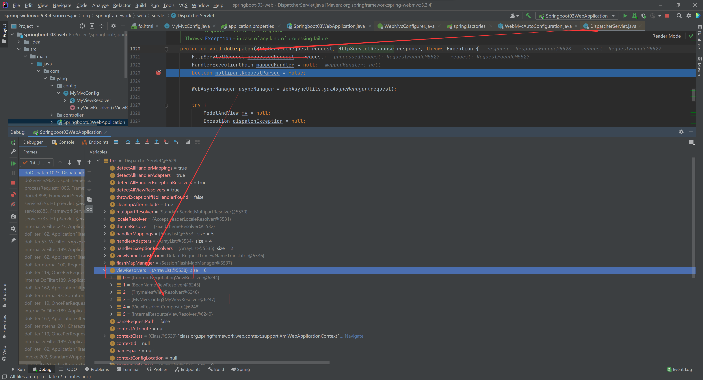
如果想要使用自己定制化的东西，我们只需要给容器中添加这个组件就好了！剩下的事情SpringBoot就会帮我们做了！
9.2 转换器和格式化器 找到格式化转换器：
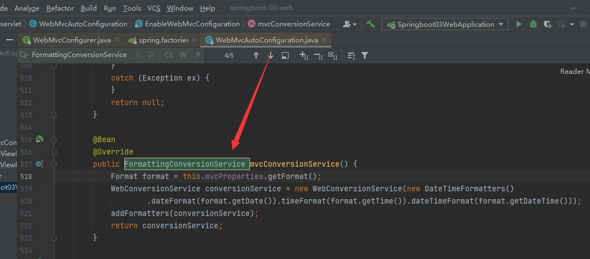
点进去：
1 Format format = this .mvcProperties.getFormat();
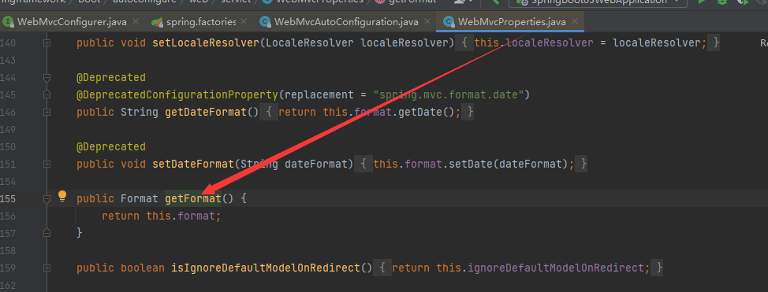
1 2 3 4 5 6 7 8 @Deprecated public void setDateFormat (String dateFormat) { this .format.setDate(dateFormat); } public Format getFormat () { return this .format; }
可以看到在我们的Properties文件中，我们可以进行自动配置它！
如果配置了自己的格式化方式，就会注册到Bean中生效，我们可以在配置文件中配置日期格式化的规则：
1 2 3 4 @ConfigurationProperties(prefix = "spring.mvc") public class WebMvcProperties { }
1 2 spring.mvc.date-format =yy-mm-dd
9.3 修改SpringBoot的默认配置 SpringBoot在自动配置很多组件的时候，先看容器中有没有用户自己配置的（如果用户自己配置@bean），如果有就用用户配置的，如果没有就用自动配置的
如果有些组件可以存在多个，比如我们的视图解析器，就将用户配置的和自己默认的组合起来！
我们要做的就是编写一个@Configuration注解类，并且类型要为WebMvcConfigurer，还不能标注@EnableWebMvc注解；我们去自己写一个；我们新建一个包叫config，写一个类MyMvcConfig
1 2 3 4 5 6 7 8 9 10 11 @Configuration public class MyMvcConfig implements WebMvcConfigurer { @Override public void addViewControllers (ViewControllerRegistry registry) { registry.addViewController("/yang" ).setViewName("test" ); } }
我们可以去分析一下原理：
1、WebMvcAutoConfiguration 是 SpringMVC的自动配置类，里面有一个类WebMvcAutoConfigurationAdapter
2、这个类上有一个注解，在做其他自动配置时会导入：@Import(EnableWebMvcConfiguration.class)
3、我们点进EnableWebMvcConfiguration这个类看一下，它继承了一个父类：DelegatingWebMvcConfiguration
这个父类中有这样一段代码：
1 2 3 4 5 6 7 8 9 10 11 public class DelegatingWebMvcConfiguration extends WebMvcConfigurationSupport { private final WebMvcConfigurerComposite configurers = new WebMvcConfigurerComposite (); @Autowired(required = false) public void setConfigurers (List<WebMvcConfigurer> configurers) { if (!CollectionUtils.isEmpty(configurers)) { this .configurers.addWebMvcConfigurers(configurers); } } }
4、我们可以在这个类中去寻找一个我们刚才设置的viewController当做参考，发现它调用了一个
1 2 3 protected void addViewControllers (ViewControllerRegistry registry) { this .configurers.addViewControllers(registry); }
5、点进去看一下
1 2 3 4 5 6 7 8 9 10 public void addViewControllers (ViewControllerRegistry registry) { Iterator var2 = this .delegates.iterator(); while (var2.hasNext()) { WebMvcConfigurer delegate = (WebMvcConfigurer)var2.next(); delegate.addViewControllers(registry); } }
所以得出结论：所有的WebMvcConfiguration都会被作用，不止Spring自己的配置类，我们自己的配置类当然也会被调用
9.4 全面接管SpringMVC 官方文档：
1 2 If you want to take complete control of Spring MVC you can add your own @Configuration annotated with @EnableWebMvc .
全面接管即：SpringBoot对SpringMVC的自动配置不需要了，所有都是我们自己去配置！
只需在我们的配置类中要加一个@EnableWebMvc。
我们看下如果我们全面接管了SpringMVC了，我们之前SpringBoot给我们配置的静态资源映射一定会无效，我们可以去测试一下；
不加注解之前，访问首页：
1、这里发现它是导入了一个类，我们可以继续进去看
1 2 3 @Import({DelegatingWebMvcConfiguration.class}) public @interface EnableWebMvc {}
2、它继承了一个父类 WebMvcConfigurationSupport
1 2 3 public class DelegatingWebMvcConfiguration extends WebMvcConfigurationSupport { }
3、我们来回顾一下Webmvc自动配置类
1 2 3 4 5 6 7 8 9 10 11 @Configuration(proxyBeanMethods = false) @ConditionalOnWebApplication(type = Type.SERVLET) @ConditionalOnClass({ Servlet.class, DispatcherServlet.class, WebMvcConfigurer.class }) @ConditionalOnMissingBean(WebMvcConfigurationSupport.class) @AutoConfigureOrder(Ordered.HIGHEST_PRECEDENCE + 10) @AutoConfigureAfter({ DispatcherServletAutoConfiguration.class, TaskExecutionAutoConfiguration.class, ValidationAutoConfiguration.class }) public class WebMvcAutoConfiguration { }
总结一句话：@EnableWebMvc将WebMvcConfigurationSupport组件导入进来了；
而导入的WebMvcConfigurationSupport只是SpringMVC最基本的功能！
10 整合JDBC SpringData简介
对于数据访问层，无论是 SQL(关系型数据库) 还是 NOSQL(非关系型数据库)，Spring Boot 底层都是采用 Spring Data 的方式进行统一处理。
Spring Boot 底层都是采用 Spring Data 的方式进行统一处理各种数据库，Spring Data 也是 Spring 中与 Spring Boot、Spring Cloud 等齐名的知名项目。
Sping Data 官网：https://spring.io/projects/spring-data
数据库相关的启动器 ：可以参考官方文档：
https://docs.spring.io/spring-boot/docs/2.2.5.RELEASE/reference/htmlsingle/#using-boot-starter
整合JDBC
创建测试项目测试数据源
2、项目建好之后，发现自动帮我们导入了如下的启动器：
1 2 3 4 5 6 7 8 9 <dependency> <groupId>org.springframework.boot</groupId> <artifactId>spring-boot-starter-jdbc</artifactId> </dependency> <dependency> <groupId>mysql</groupId> <artifactId>mysql-connector-java</artifactId> <scope>runtime</scope> </dependency>
3、编写yaml配置文件连接数据库；
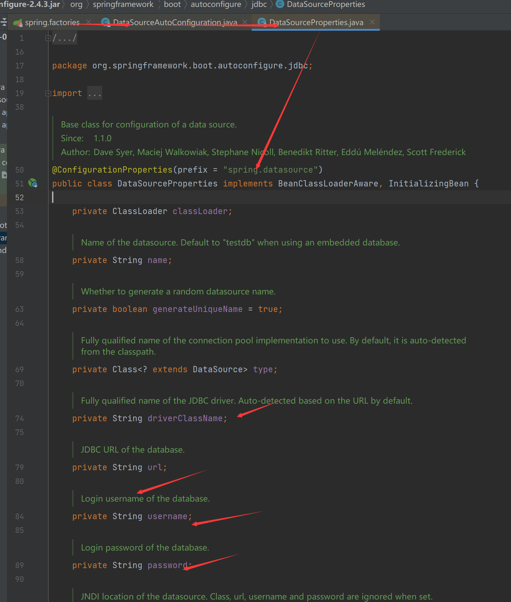
1 2 3 4 5 6 7 spring: datasource: username: root password: 123456 #?serverTimezone=UTC解决时区的报错 url: jdbc:mysql://localhost:3306/springboot?serverTimezone=UTC&useUnicode=true&characterEncoding=utf-8 driver-class-name: com.mysql.cj.jdbc.Driver
4、配置完这一些东西后，我们就可以直接去使用了，因为SpringBoot已经默认帮我们进行了自动配置；去测试类测试一下
1 2 3 4 5 6 7 8 9 10 11 12 13 14 15 16 17 18 @SpringBootTest class SpringbootDataJdbcApplicationTests { @Autowired DataSource dataSource; @Test public void contextLoads () throws SQLException { System.out.println(dataSource.getClass()); Connection connection = dataSource.getConnection(); System.out.println(connection); connection.close(); } }
结果：我们可以看到他默认给我们配置的数据源为 : class com.zaxxer.hikari.HikariDataSource ， 我们并没有手动配置
我们来全局搜索一下，找到数据源的所有自动配置都在 ：DataSourceAutoConfiguration文件：
1 2 3 4 5 6 7 @Import( {Hikari.class, Tomcat.class, Dbcp2.class, Generic.class, DataSourceJmxConfiguration.class} ) protected static class PooledDataSourceConfiguration { protected PooledDataSourceConfiguration () { } }
这里导入的类都在 DataSourceConfiguration 配置类下，可以看出 Spring Boot 2.2.5 默认使用HikariDataSource 数据源，而以前版本，如 Spring Boot 1.5 默认使用 org.apache.tomcat.jdbc.pool.DataSource 作为数据源；
HikariDataSource 号称 Java WEB 当前速度最快的数据源，相比于传统的 C3P0 、DBCP、Tomcat jdbc 等连接池更加优秀；
可以使用 spring.datasource.type 指定自定义的数据源类型，值为 要使用的连接池实现的完全限定名。
关于数据源我们并不做介绍，有了数据库连接，显然就可以 CRUD 操作数据库了。但是我们需要先了解一个对象 JdbcTemplate
JDBCTemplate
1、有了数据源(com.zaxxer.hikari.HikariDataSource)，然后可以拿到数据库连接(java.sql.Connection)，有了连接，就可以使用原生的 JDBC 语句来操作数据库；
2、即使不使用第三方第数据库操作框架，如 MyBatis等，Spring 本身也对原生的JDBC 做了轻量级的封装，即JdbcTemplate。
3、数据库操作的所有 CRUD 方法都在 JdbcTemplate 中。
4、Spring Boot 不仅提供了默认的数据源，同时默认已经配置好了 JdbcTemplate 放在了容器中，程序员只需自己注入即可使用
5、JdbcTemplate 的自动配置是依赖 org.springframework.boot.autoconfigure.jdbc 包下的 JdbcTemplateConfiguration 类
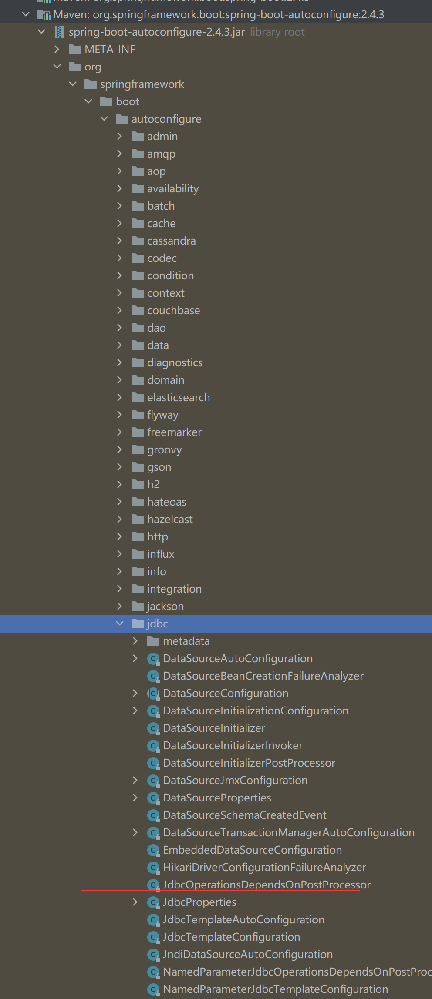
1 2 3 4 5 6 7 8 9 10 11 12 13 14 15 16 17 18 19 20 21 22 23 24 25 26 27 28 29 30 31 32 33 34 package org.springframework.boot.autoconfigure.jdbc;import javax.sql.DataSource;import org.springframework.boot.autoconfigure.condition.ConditionalOnMissingBean;import org.springframework.context.annotation.Bean;import org.springframework.context.annotation.Configuration;import org.springframework.context.annotation.Primary;import org.springframework.jdbc.core.JdbcOperations;import org.springframework.jdbc.core.JdbcTemplate;@Configuration(proxyBeanMethods = false) @ConditionalOnMissingBean(JdbcOperations.class) class JdbcTemplateConfiguration { @Bean @Primary JdbcTemplate jdbcTemplate (DataSource dataSource, JdbcProperties properties) { JdbcTemplate jdbcTemplate = new JdbcTemplate (dataSource); JdbcProperties.Template template = properties.getTemplate(); jdbcTemplate.setFetchSize(template.getFetchSize()); jdbcTemplate.setMaxRows(template.getMaxRows()); if (template.getQueryTimeout() != null ) { jdbcTemplate.setQueryTimeout((int ) template.getQueryTimeout().getSeconds()); } return jdbcTemplate; } }
JdbcTemplate主要提供以下几类方法：
1 2 3 4 5 6 7 execute方法：可以用于执行任何SQL语句，一般用于执行DDL语句； update方法及batchUpdate方法：update方法用于执行新增、修改、删除等语句；batchUpdate方法用于执行批处理相关语句； query方法及queryForXXX方法：用于执行查询相关语句； call方法：用于执行存储过程、函数相关语句。
测试
编写一个Controller，注入 jdbcTemplate，编写测试方法进行访问测试；
1 2 3 4 5 6 7 8 9 10 11 12 13 14 15 16 17 18 19 20 21 22 23 24 25 26 27 28 29 30 31 32 33 34 35 36 37 38 39 40 41 42 43 44 45 46 47 48 49 50 51 52 53 54 55 56 57 58 59 60 61 62 63 64 65 66 67 68 69 70 71 package com.yang.controller;import org.springframework.beans.factory.annotation.Autowired;import org.springframework.jdbc.core.JdbcTemplate;import org.springframework.web.bind.annotation.GetMapping;import org.springframework.web.bind.annotation.PathVariable;import org.springframework.web.bind.annotation.RequestMapping;import org.springframework.web.bind.annotation.RestController;import java.util.Date;import java.util.List;import java.util.Map;@RestController @RequestMapping("/jdbc") public class JdbcController { @Autowired JdbcTemplate jdbcTemplate; @GetMapping("/list") public List<Map<String, Object>> userList () { String sql = "select * from employee" ; List<Map<String, Object>> maps = jdbcTemplate.queryForList(sql); return maps; } @GetMapping("/add") public String addUser () { String sql = "insert into employee(last_name, email,gender,department,birth)" + " values ('狂神说','24736743@qq.com',1,101,'" + new Date ().toLocaleString() +"')" ; jdbcTemplate.update(sql); return "addOk" ; } @GetMapping("/update/{id}") public String updateUser (@PathVariable("id") int id) { String sql = "update employee set last_name=?,email=? where id=" +id; Object[] objects = new Object [2 ]; objects[0 ] = "秦疆" ; objects[1 ] = "24736743@sina.com" ; jdbcTemplate.update(sql,objects); return "updateOk" ; } @GetMapping("/delete/{id}") public String delUser (@PathVariable("id") int id) { String sql = "delete from employee where id=?" ; jdbcTemplate.update(sql,id); return "deleteOk" ; } }
测试请求，结果正常；
到此，CURD的基本操作，使用 JDBC 就搞定了。
11 整合Druid
Druid简介
Java程序很大一部分要操作数据库，为了提高性能操作数据库的时候，又不得不使用数据库连接池。
Druid 是阿里巴巴开源平台上一个数据库连接池实现，结合了 C3P0、DBCP 等 DB 池的优点，同时加入了日志监控。
Druid 可以很好的监控 DB 池连接和 SQL 的执行情况，天生就是针对监控而生的 DB 连接池。
Druid已经在阿里巴巴部署了超过600个应用，经过一年多生产环境大规模部署的严苛考验。
Spring Boot 2.0 以上默认使用 Hikari 数据源，可以说 Hikari 与 Driud 都是当前 Java Web 上最优秀的数据源，我们来重点介绍 Spring Boot 如何集成 Druid 数据源，如何实现数据库监控。
Github地址：https://github.com/alibaba/druid/
com.alibaba.druid.pool.DruidDataSource 基本配置参数如下：
配置数据源
1、添加上 Druid 数据源依赖。
1 2 3 4 5 6 <dependency > <groupId > com.alibaba</groupId > <artifactId > druid</artifactId > <version > 1.1.21</version > </dependency >
2、切换数据源；之前已经说过 Spring Boot 2.0 以上默认使用 com.zaxxer.hikari.HikariDataSource 数据源，但可以 通过 spring.datasource.type 指定数据源。
1 2 3 4 5 6 7 spring: datasource: username: root password: 123456 url: jdbc:mysql://localhost:3306/springboot?serverTimezone=UTC&useUnicode=true&characterEncoding=utf-8 driver-class-name: com.mysql.cj.jdbc.Driver type: com.alibaba.druid.pool.DruidDataSource
3、数据源切换之后，在测试类中注入 DataSource，然后获取到它，输出一看便知是否成功切换；
4、切换成功！既然切换成功，就可以设置数据源连接初始化大小、最大连接数、等待时间、最小连接数 等设置项；可以查看源码
1 2 3 4 5 6 7 8 9 10 11 12 13 14 15 16 17 18 19 20 21 22 23 24 25 26 27 28 29 30 spring: datasource: username: root password: 123456 url: jdbc:mysql://localhost:3306/springboot?serverTimezone=UTC&useUnicode=true&characterEncoding=utf-8 driver-class-name: com.mysql.cj.jdbc.Driver type: com.alibaba.druid.pool.DruidDataSource initialSize: 5 minIdle: 5 maxActive: 20 maxWait: 60000 timeBetweenEvictionRunsMillis: 60000 minEvictableIdleTimeMillis: 300000 validationQuery: SELECT 1 FROM DUAL testWhileIdle: true testOnBorrow: false testOnReturn: false poolPreparedStatements: true filters: stat,wall,log4j maxPoolPreparedStatementPerConnectionSize: 20 useGlobalDataSourceStat: true connectionProperties: druid.stat.mergeSql=true;druid.stat.slowSqlMillis=500
5、导入Log4j 的依赖
1 2 3 4 5 6 <dependency > <groupId > log4j</groupId > <artifactId > log4j</artifactId > <version > 1.2.17</version > </dependency >
6、现在需要程序员自己为 DruidDataSource 绑定全局配置文件中的参数，再添加到容器中，而不再使用 Spring Boot 的自动生成了；我们需要 自己添加 DruidDataSource 组件到容器中，并绑定属性；
1 2 3 4 5 6 7 8 9 10 11 12 13 14 15 16 17 18 19 20 21 22 23 24 25 package com.kuang.config;import com.alibaba.druid.pool.DruidDataSource;import org.springframework.boot.context.properties.ConfigurationProperties;import org.springframework.context.annotation.Bean;import org.springframework.context.annotation.Configuration;import javax.sql.DataSource;@Configuration public class DruidConfig { @ConfigurationProperties(prefix = "spring.datasource") @Bean public DataSource druidDataSource () { return new DruidDataSource (); } }
7、去测试类中测试一下；看是否成功！
1 2 3 4 5 6 7 8 9 10 11 12 13 14 15 16 17 18 19 20 21 22 23 @SpringBootTest class SpringbootDataJdbcApplicationTests { @Autowired DataSource dataSource; @Test public void contextLoads () throws SQLException { System.out.println(dataSource.getClass()); Connection connection = dataSource.getConnection(); System.out.println(connection); DruidDataSource druidDataSource = (DruidDataSource) dataSource; System.out.println("druidDataSource 数据源最大连接数：" + druidDataSource.getMaxActive()); System.out.println("druidDataSource 数据源初始化连接数：" + druidDataSource.getInitialSize()); connection.close(); } }
输出结果 ：可见配置参数已经生效！
配置Druid数据源监控
Druid 数据源具有监控的功能，并提供了一个 web 界面方便用户查看，类似安装 路由器 时，人家也提供了一个默认的 web 页面。
所以第一步需要设置 Druid 的后台管理页面，比如 登录账号、密码 等；配置后台管理；
1 2 3 4 5 6 7 8 9 10 11 12 13 14 15 16 17 18 19 20 21 22 23 @Bean public ServletRegistrationBean statViewServlet () { ServletRegistrationBean bean = new ServletRegistrationBean (new StatViewServlet (), "/druid/*" ); Map<String, String> initParams = new HashMap <>(); initParams.put("loginUsername" , "admin" ); initParams.put("loginPassword" , "123456" ); initParams.put("allow" , "" ); bean.setInitParameters(initParams); return bean; }
配置完毕后，我们可以选择访问 ：http://localhost:8080/druid/login.html
进入之后
配置 Druid web 监控 filter 过滤器
1 2 3 4 5 6 7 8 9 10 11 12 13 14 15 16 @Bean public FilterRegistrationBean webStatFilter () { FilterRegistrationBean bean = new FilterRegistrationBean (); bean.setFilter(new WebStatFilter ()); Map<String, String> initParams = new HashMap <>(); initParams.put("exclusions" , "*.js,*.css,/druid/*,/jdbc/*" ); bean.setInitParameters(initParams); bean.setUrlPatterns(Arrays.asList("/*" )); return bean; }
12 整合Mybatis 官方文档：http://mybatis.org/spring-boot-starter/mybatis-spring-boot-autoconfigure/
12.1 整合测试 1、导入 MyBatis 所需要的依赖
1 2 3 4 5 <dependency > <groupId > org.mybatis.spring.boot</groupId > <artifactId > mybatis-spring-boot-starter</artifactId > <version > 2.2</version > </dependency >
2.配置数据库连接信息
1 2 3 4 5 6 7 spring: datasource: username: root password: 123456 url: jdbc:mysql://localhost:3306/mybatis?serverTimezone=UTC&useUnicode=true&characterEncoding=UTF-8 driver-class-name: com.mysql.cj.jdbc.Driver
3、测试数据库是否连接成功！
4、创建实体类，导入 Lombok!
1 2 3 4 5 <dependency > <groupId > org.projectlombok</groupId > <artifactId > lombok</artifactId > <version > 1.18.18</version > </dependency >
User.java
1 2 3 4 5 6 7 8 9 10 11 12 13 14 package com.yang.pojo;import lombok.AllArgsConstructor;import lombok.Data;import lombok.NoArgsConstructor;@Data @NoArgsConstructor @AllArgsConstructor public class User { private int id; private String name; private String pwd; }
5、创建mapper目录以及对应的 Mapper 接口
UserMapper.java
1 2 3 4 5 6 7 8 9 10 11 12 13 14 15 16 17 18 19 20 21 22 23 24 25 26 package com.yang.mapper;import com.yang.pojo.User;import org.apache.ibatis.annotations.Mapper;import org.springframework.stereotype.Repository;import java.util.List;@Mapper @Repository public interface UserMapper { public static final int age=18 ; public abstract List<User> queryUserList () ; User queryUserById (Integer id) ; int addUser (User user) ; int updateUser (User user) ; int deleteUserById (Integer id) ; }
接下来该去配置mapper.xml文件了，这里建议创建在resources的目录下：
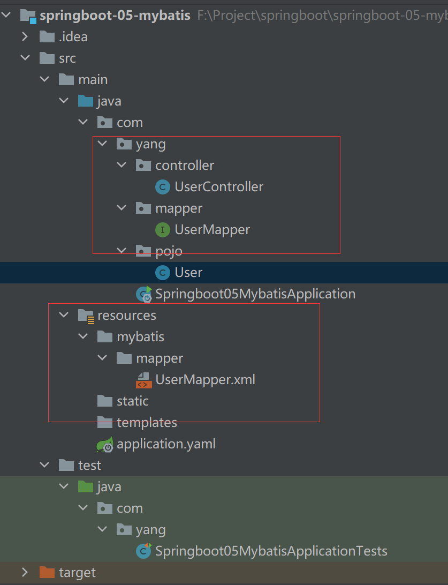
UserMapper.xml文件：
1 2 3 4 5 6 7 8 9 10 11 12 <?xml version="1.0" encoding="UTF-8" ?> <!DOCTYPE mapper PUBLIC "-//mybatis.org//DTD Config 3.0//EN" "http://mybatis.org/dtd/mybatis-3-mapper.dtd" > <mapper namespace ="com.yang.mapper.UserMapper" > <select id ="queryUserList" resultType ="User" > select * from user; </select > </mapper >
1 2 3 4 mybatis: type-aliases-package: com.yang.pojo mapper-locations: classpath:mybatis/mapper/*.xml
暂时先不写service层，直接写controller调用mapper
1 2 3 4 5 6 7 8 9 10 11 12 13 14 15 16 17 18 19 20 21 22 package com.yang.controller;import com.yang.mapper.UserMapper;import com.yang.pojo.User;import org.springframework.beans.factory.annotation.Autowired;import org.springframework.web.bind.annotation.GetMapping;import org.springframework.web.bind.annotation.RestController;import java.util.List;@RestController public class UserController { @Autowired private UserMapper userMapper; @GetMapping("/queryUserList") public List<User> List () { return userMapper.queryUserList(); } }
13 SpringSecurity(安全) 14 Shiro 15 Swagger 学习目标：
了解Swagger的概念及作用
掌握在项目中集成Swagger自动生成API文档
15.1 Swagger简介 前后端分离
前端 -> 前端控制层、视图层
后端 -> 后端控制层、服务层、数据访问层
前后端通过API进行交互
前后端相对独立，且松耦合
产生的问题
前后端集成，前端或者后端无法做到“及时协商，尽早解决”，最终导致问题集中爆发
解决方案
首先定义schema [ 计划的提纲 ]，并实时跟踪最新的API，降低集成风险
早些年制定word计划文档
前后端分离：前端测试后端接口：postman
Swagger
号称世界上最流行的API框架
Restful Api 文档在线自动生成器 => API 文档 与API 定义同步更新
直接运行，在线测试API接口（其实就是controller requsetmapping）
支持多种语言 （如：Java，PHP等）
官网：https://swagger.io/
15.2 Springboot集成Swagger SpringBoot集成Swagger => springfox，两个jar包
Springfox-swagger2
swagger-springmvc
使用Swagger
要求：jdk 1.8 + 否则swagger2无法运行
步骤：
1、新建一个SpringBoot-web项目
2、添加Maven依赖
1 2 3 4 5 6 7 8 9 10 11 12 <dependency > <groupId > io.springfox</groupId > <artifactId > springfox-swagger2</artifactId > <version > 2.9.2</version > </dependency > <dependency > <groupId > io.springfox</groupId > <artifactId > springfox-swagger-ui</artifactId > <version > 2.9.2</version > </dependency >
3、编写HelloController，测试确保运行成功！
4、要使用Swagger，我们需要编写一个配置类-SwaggerConfig来配置 Swagger
1 2 3 4 5 6 7 8 9 10 11 12 13 14 15 16 17 18 19 20 21 package com.yang.swagger.config;import org.springframework.context.annotation.Bean;import org.springframework.context.annotation.Configuration;import org.springframework.core.env.Environment;import org.springframework.core.env.Profiles;import springfox.documentation.builders.RequestHandlerSelectors;import springfox.documentation.service.ApiInfo;import springfox.documentation.service.Contact;import springfox.documentation.service.VendorExtension;import springfox.documentation.spi.DocumentationType;import springfox.documentation.spring.web.plugins.Docket;import springfox.documentation.swagger2.annotations.EnableSwagger2;import java.util.ArrayList;@Configuration @EnableSwagger2 public class SwaggerConfig { }
5、访问测试 ：http://localhost:8080/swagger-ui.html ，可以看到swagger的界面；
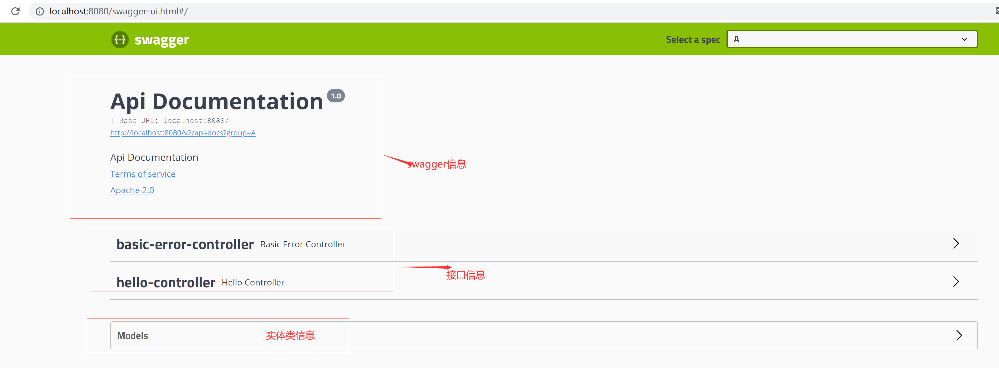
15.3 配置Swagger 1、Swagger实例Bean是Docket，所以通过配置Docket实例来配置Swagger,通过Docket对象接管了原来默认的配置
1 2 3 4 @Bean public Docket docket1 () { return new Docket (DocumentationType.SWAGGER_2).groupName("A" ); }
2、可以通过apiInfo()属性配置文档信息
1 2 3 4 5 6 7 8 9 10 11 12 private ApiInfo apiInfo () { Contact contact = new Contact ("杨同宇" , "https://www.baidu.com/" , "1234567@qq.com" ); return new ApiInfo ("未来可期的API文档" , "王者荣耀" , "V1.0" , "https://www.baidu.com" , contact, "Apache 2.0" , "http://www.apache.org/licenses/LICENSE-2.0" , new ArrayList <VendorExtension>()); }
3、Docket 实例关联上 apiInfo()
1 2 3 4 @Bean public Docket docket1 () { return new Docket (DocumentationType.SWAGGER_2).groupName("A" ).apiInfo(apiInfo()); }
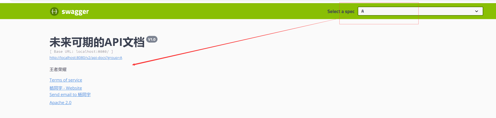
15.4 配置扫描接口 1、构建Docket时通过select()方法配置怎么扫描接口
1 2 3 4 5 6 7 8 9 10 11 12 13 14 15 16 17 18 @Bean public Docket docket1 () { return new Docket (DocumentationType.SWAGGER_2).groupName("A" ).apiInfo(apiInfo()) .select() .enable(true ) .apis(RequestHandlerSelectors.basePackage("com.yang.swagger.controller" )) .build(); }
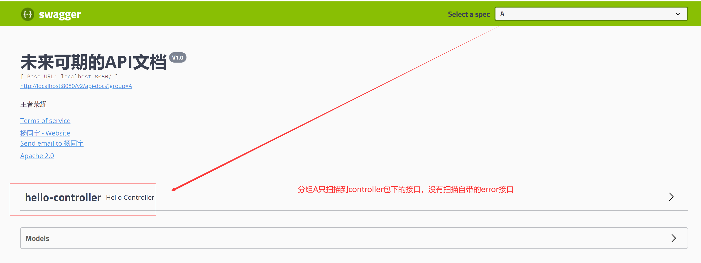
2、如何动态配置当项目处于test、dev环境时显示swagger，处于prod时不显示？
1 2 3 4 5 6 7 8 9 10 11 12 13 14 15 16 17 18 19 20 21 22 23 24 25 26 @Bean public Docket docket (Environment environment) { Profiles profiles = Profiles.of("dev" ,"test" ); boolean flag = environment.acceptsProfiles(profiles); System.out.println(flag); return new Docket (DocumentationType.SWAGGER_2) .apiInfo(apiInfo()) .groupName("未来可期" ) .enable(flag) .select() .apis(RequestHandlerSelectors.basePackage("com.yang.swagger.controller" )) .build(); }
15.5 配置API分组 如果没有配置分组，默认是default。通过groupName()方法即可配置分组：
1 2 3 4 5 6 7 8 9 10 11 12 13 14 15 16 17 18 19 20 21 22 23 24 25 26 27 28 29 30 31 32 33 34 35 36 37 38 39 40 41 42 43 44 45 46 47 48 49 50 51 52 53 54 55 56 57 58 59 60 61 62 63 64 65 66 67 68 69 70 71 72 73 74 75 76 77 78 79 80 81 82 83 84 85 package com.yang.swagger.config;import org.springframework.context.annotation.Bean;import org.springframework.context.annotation.Configuration;import org.springframework.core.env.Environment;import org.springframework.core.env.Profiles;import springfox.documentation.builders.RequestHandlerSelectors;import springfox.documentation.service.ApiInfo;import springfox.documentation.service.Contact;import springfox.documentation.service.VendorExtension;import springfox.documentation.spi.DocumentationType;import springfox.documentation.spring.web.plugins.Docket;import springfox.documentation.swagger2.annotations.EnableSwagger2;import java.util.ArrayList;@Configuration @EnableSwagger2 public class SwaggerConfig { @Bean public Docket docket1 () { return new Docket (DocumentationType.SWAGGER_2).groupName("A" ).apiInfo(apiInfo()) .select() .apis(RequestHandlerSelectors.basePackage("com.yang.swagger.controller" )) .build(); } @Bean public Docket docket2 () { return new Docket (DocumentationType.SWAGGER_2).groupName("B" ); } @Bean public Docket docket3 () { return new Docket (DocumentationType.SWAGGER_2).groupName("C" ); } @Bean public Docket docket4 () { return new Docket (DocumentationType.SWAGGER_2).groupName("D" ); } @Bean public Docket docket (Environment environment) { Profiles profiles = Profiles.of("dev" ,"test" ); boolean flag = environment.acceptsProfiles(profiles); System.out.println(flag); return new Docket (DocumentationType.SWAGGER_2) .apiInfo(apiInfo()) .groupName("未来可期" ) .enable(flag) .select() .apis(RequestHandlerSelectors.basePackage("com.yang.swagger.controller" )) .build(); } private ApiInfo apiInfo () { Contact contact = new Contact ("杨同宇" , "https://www.baidu.com/" , "1234567@qq.com" ); return new ApiInfo ("未来可期的API文档" , "王者荣耀" , "V1.0" , "https://www.baidu.com" , contact, "Apache 2.0" , "http://www.apache.org/licenses/LICENSE-2.0" , new ArrayList <VendorExtension>()); } }
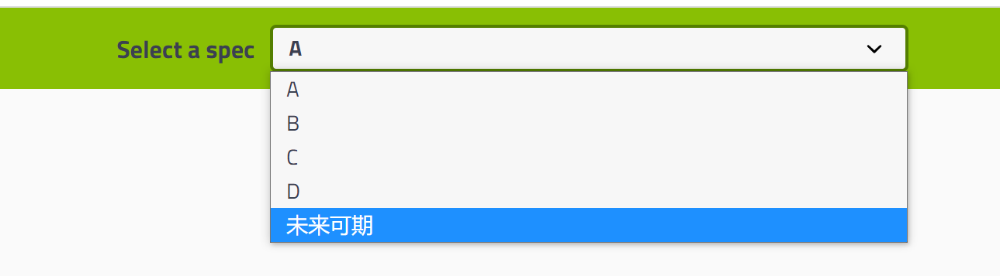
15.6 实体类配置 1、新建一个实体类
1 2 3 4 5 6 7 8 9 10 11 12 13 package com.yang.swagger.pojo;import io.swagger.annotations.Api;import io.swagger.annotations.ApiModel;import io.swagger.annotations.ApiModelProperty;@ApiModel("用户实体类") public class User { @ApiModelProperty("用户名") public String username; @ApiModelProperty("密码") public String password; }
2、只要这个实体在请求接口 的返回值上（即使是泛型），都能映射到实体项中：
1 2 3 4 5 @PostMapping("/user") public User user () { return new User (); }
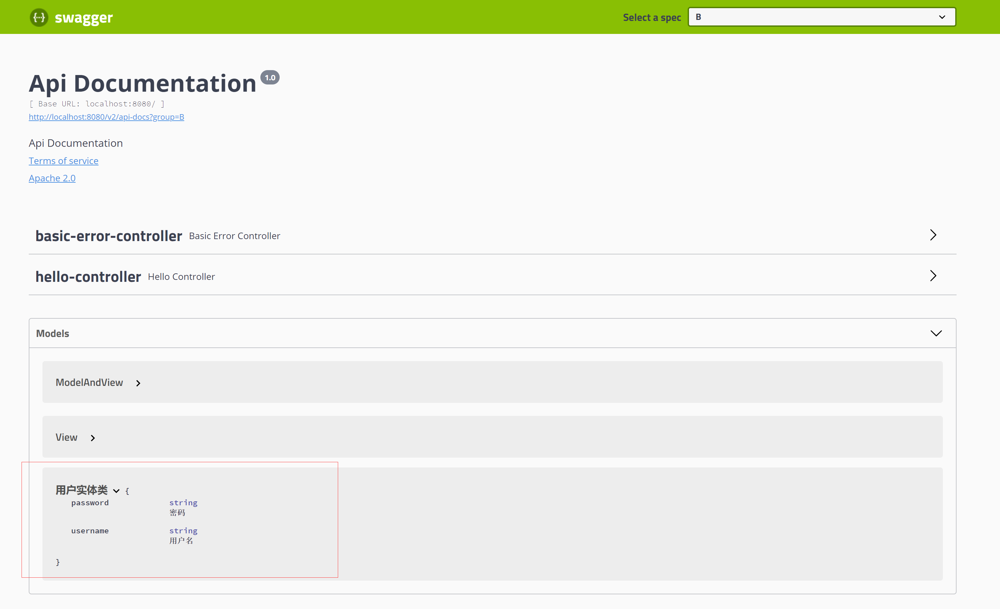
注：并不是因为@ApiModel这个注解让实体显示在这里了，而是只要出现在接口方法的返回值上的实体都会显示在这里，而@ApiModel和@ApiModelProperty这两个注解只是为实体添加注释的。
@ApiModel为类添加注释
@ApiModelProperty为类属性添加注释
1 2 3 4 5 6 7 8 9 10 11 12 13 14 15 16 17 18 19 20 21 22 23 24 25 26 27 28 29 30 31 package com.yang.swagger.controller;import com.yang.swagger.pojo.User;import io.swagger.annotations.ApiOperation;import io.swagger.annotations.ApiParam;import org.springframework.web.bind.annotation.*;@RestController public class HelloController { @ApiOperation("Hello控制类") @GetMapping("/hello") public String hello () { return "hello" ; } @PostMapping("/user") public User user () { return new User (); } @ApiOperation("Get测试类") @GetMapping("/getApi") public String postt (@ApiParam("用户名") String username) { return "user：" +username; } @ApiOperation("restful风格") @PostMapping("/restful/{username}") public String restfulTest (@ApiParam("用户名") @PathVariable("username") String username) { return "user：" +username; } }
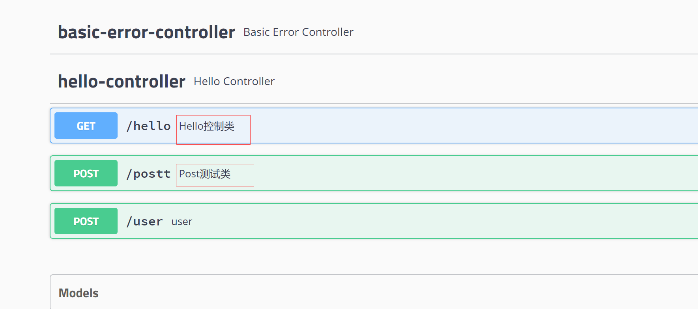
1 2 3 4 5 @ApiOperation("Post测试类") @PostMapping("/postt") public String postt (@ApiParam("用户名") String username) { return "user" +username; }
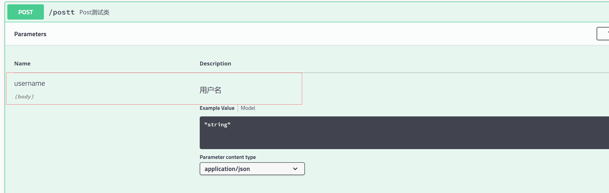
15.7 测试功能 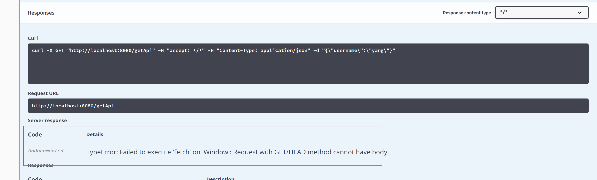
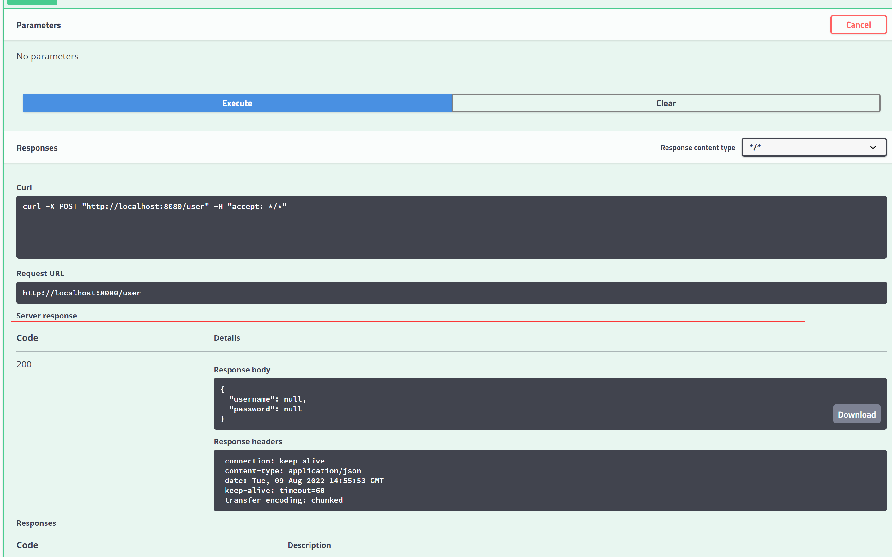
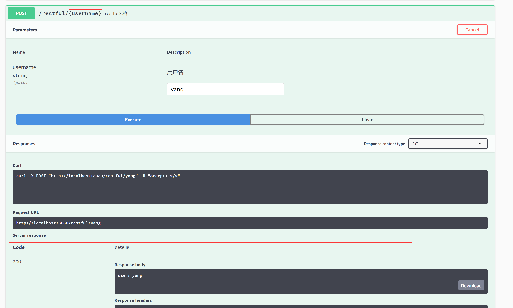
16 Dubbo和Zookeeper集成 16.1 Dubbo文档 随着互联网的发展，网站应用的规模不断扩大，常规的垂直应用架构已无法应对，分布式服务架构以及流动计算架构势在必行，急需一个治理系统确保架构有条不紊的演进。
在Dubbo的官网文档有这样一张图
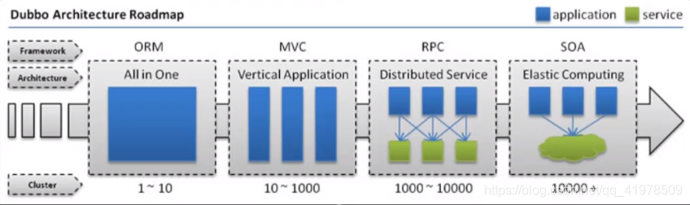
单一应用架构
当网站流量很小时，只需一个应用，将所有功能都部署在一起，以减少部署节点和成本。此时，用于简化增删改查工作量的数据访问框架(ORM)是关键。
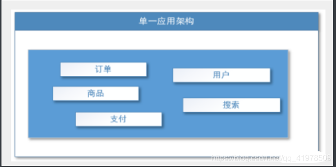
适用于小型网站，小型管理系统，将所有功能都部署到一个功能里，简单易用。
缺点：
1、性能扩展比较难
2、协同开发问题
3、不利于升级维护
垂直应用架构
当访问量逐渐增大，单一应用增加机器带来的加速度越来越小，将应用拆成互不相干的几个应用，以提升效率。此时，用于加速前端页面开发的Web框架(MVC)是关键。
通过切分业务来实现各个模块独立部署，降低了维护和部署的难度，团队各司其职更易管理，性能扩展也更方便，更有针对性。
缺点：公用模块无法重复利用，开发性的浪费
分布式服务架构
当垂直应用越来越多，应用之间交互不可避免，将核心业务抽取出来，作为独立的服务，逐渐形成稳定的服务中心，使前端应用能更快速的响应多变的市场需求。此时，用于提高业务复用及整合的**分布式服务框架(RPC)**是关键。
流动计算架构
当服务越来越多，容量的评估，小服务资源的浪费等问题逐渐显现，此时需增加一个调度中心基于访问压力实时管理集群容量，提高集群利用率。此时，用于**提高机器利用率的资源调度和治理中心(**SOA)[ Service Oriented Architecture]是关键。
16.2 什么是RPC RPC【Remote Procedure Call】是指远程过程调用，是一种进程间通信方式，他是一种技术的思想，而不是规范。它允许程序调用另一个地址空间（通常是共享网络的另一台机器上）的过程或函数，而不用程序员显式编码这个远程调用的细节。即程序员无论是调用本地的还是远程的函数，本质上编写的调用代码基本相同。
也就是说两台服务器A，B，一个应用部署在A服务器上，想要调用B服务器上应用提供的函数/方法，由于不在一个内存空间，不能直接调用，需要通过网络来表达调用的语义和传达调用的数据。为什么要用RPC呢？就是无法在一个进程内，甚至一个计算机内通过本地调用的方式完成的需求，比如不同的系统间的通讯，甚至不同的组织间的通讯，由于计算能力需要横向扩展，需要在多台机器组成的集群上部署应用。RPC就是要像调用本地的函数一样去调远程函数；
推荐阅读文章：https://www.jianshu.com/p/2accc2840a1b
说白了就是不同于调用本地的而是调用远程资源和方法
RPC原理：
步骤分析：
RPC两个核心模块：通讯，序列化
16.3 Dubbo的概念和介绍 16.3.1 Dubbo是什么 Dubbo是一个分布式服务框架，致力于提供高性能和透明化的RPC远程服务调用方案，以及SOA服务治理方案。简单的说，dubbo就是个服务框架，如果没有分布式的需求，其实是不需要用的，只有在分布式的时候，才有dubbo这样的分布式服务框架的需求，并且本质上是个服务调用的东东，说白了就是个远程服务调用的分布式框架
其核心部分包含:
16.3.2 Dubbo能做什么 1.透明化的远程方法调用，就像调用本地方法一样调用远程方法，只需简单配置，没有任何API侵入。
16.4 搭建测试环境 Apache Dubbo 是一款高性能、轻量级的开源Java RPC框架，它提供了三大核心能力：面向接口的远程方法调用，智能容错和负载均衡，以及服务自动注册和发现。
dubbo官网 http://dubbo.apache.org/zh-cn/index.html
服务提供者 （Provider）：暴露服务的服务提供方，服务提供者在启动时，向注册中心注册自己提供的服务。
服务消费者 （Consumer）：调用远程服务的服务消费方，服务消费者在启动时，向注册中心订阅自己所需的服务，服务消费者，从提供者地址列表中，基于软负载均衡算法，选一台提供者进行调用，如果调用失败，再选另一台调用。
注册中心 （Registry）：注册中心返回服务提供者地址列表给消费者，如果有变更，注册中心将基于长连接推送变更数据给消费者
监控中心 （Monitor）：服务消费者和提供者，在内存中累计调用次数和调用时间，定时每分钟发送一次统计数据到监控中心
调用关系说明
服务容器负责启动，加载，运行服务提供者。
服务提供者在启动时，向注册中心注册自己提供的服务。
服务消费者在启动时，向注册中心订阅自己所需的服务。
注册中心返回服务提供者地址列表给消费者，如果有变更，注册中心将基于长连接推送变更数据给消费者。
服务消费者，从提供者地址列表中，基于软负载均衡算法，选一台提供者进行调用，如果调用失败，再选另一台调用。
服务消费者和提供者，在内存中累计调用次数和调用时间，定时每分钟发送一次统计数据到监控中心
16.4.1 Zookeeper介绍 Zoookeeper是什么？
官方文档上这么解释zookeeper，它是一个分布式服务框架，是Apache Hadoop 的一个子项目，它主要是用来解决分布式应用中经常遇到的一些数据管理问题，如：统一命名服务、状态同步服务、集群管理、分布式应用配置项的管理等。
上面的解释有点抽象，简单来说zookeeper=文件系统+监听通知机制
每个子目录项如 NameService 都被称作为 znode(目录节点)，和文件系统一样，我们能够自由的增加、删除znode，在一个znode下增加、删除子znode，唯一的不同在于znode是可以存储数据的。
PERSISTENT-持久化目录节点
PERSISTENT_SEQUENTIAL-持久化顺序编号目录节点
EPHEMERAL-临时目录节点
EPHEMERAL_SEQUENTIAL-临时顺序编号目录节点
2.监听通知机制
就这么简单，下面我们看看Zookeeper能做点什么呢？
Zookeeper能做什么
假设我们的程序是分布式部署在多台机器上，如果我们要改变程序的配置文件，需要逐台机器去修改，非常麻烦，现在把这些配置全部放到zookeeper上去，保存在 zookeeper 的某个目录节点中，然后所有相关应用程序对这个目录节点进行监听，一旦配置信息发生变化，每个应用程序就会收到 zookeeper 的通知，然后从 zookeeper 获取新的配置信息应用到系统中。
16.4.2 windows下安装zookeeper 1、下载zookeeper ：地址， 我们下载3.4.14 ， 最新版！解压zookeeper
2、管理员运行/bin/zkServer.cmd ，初次运行会报错，没有zoo.cfg配置文件；
安装包地址：链接：https://zookeeper.apache.org/releases.html
可能遇到问题：闪退 !
解决方案：编辑zkServer.cmd文件末尾添加pause 。这样运行出错就不会退出，会提示错误信息，方便找到原因
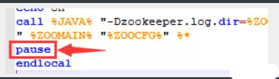
3、修改zoo.cfg配置文件
将conf文件夹下面的zoo_sample.cfg复制一份改名为zoo.cfg即可。
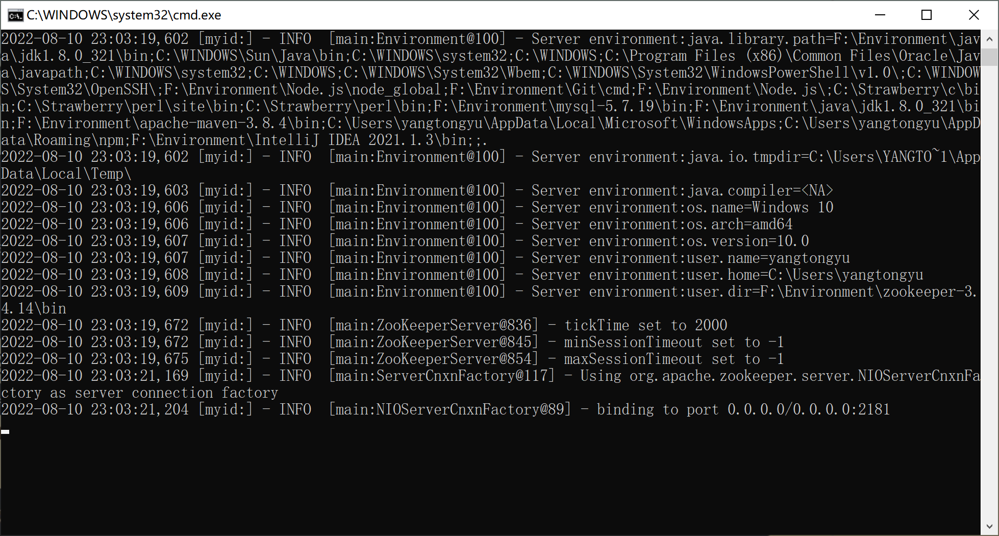
注意几个重要位置：
dataDir=./ 临时数据存储的目录（可写相对路径）
clientPort=2181 zookeeper的端口号
修改完成后再次启动zookeeper
4、使用zkCli.cmd测试
ls /：列出zookeeper根下保存的所有节点
1 2 [zk: 127.0 .0 .1 :2181 (CONNECTED) 4 ] ls / [zookeeper]
create –e /guo123：创建一个guo节点，值为123
我们再来查看一下节点
16.4.3 window下安装dubbo-admin dubbo本身并不是一个服务软件。它其实就是一个jar包，能够帮你的java程序连接到zookeeper，并利用zookeeper消费、提供服务。
但是为了让用户更好的管理监控众多的dubbo服务，官方提供了一个可视化的监控程序dubbo-admin，不过这个监控即使不装也不影响使用。
我们这里来安装一下：
1、下载dubbo-admin
地址 ：https://github.com/apache/dubbo-admin/tree/master
2、解压进入目录
修改 dubbo-admin\src\main\resources \application.指定zookeeper地址
1 2 3 4 5 6 7 8 9 10 server.port =7001 spring.velocity.cache =false spring.velocity.charset =UTF-8 spring.velocity.layout-url =/templates/default.vm spring.messages.fallback-to-system-locale =false spring.messages.basename =i18n/message spring.root.password =root spring.guest.password =guest dubbo.registry.address =zookeeper://127.0.0.1:2181
3、在项目目录下 打包dubbo-admin
1 mvn clean package -Dmaven.test.skip=true
第一次打包的过程有点慢，需要耐心等待！直到成功！
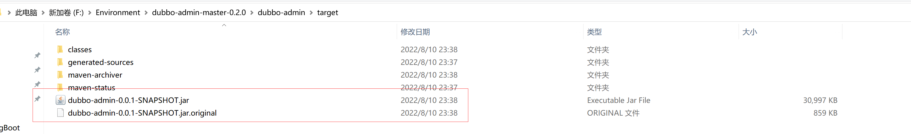
4、执行 dubbo-admin\target 下的dubbo-admin-0.0.1-SNAPSHOT.jar
1 java -jar dubbo-admin-0.0 .1 -SNAPSHOT.jar
【注意：zookeeper的服务一定要打开！】
执行完毕，我们去访问一下 http://localhost:7001/ ， 这时候我们需要输入登录账户和密码，我们都是默认的root-root；
登录成功后，查看界面
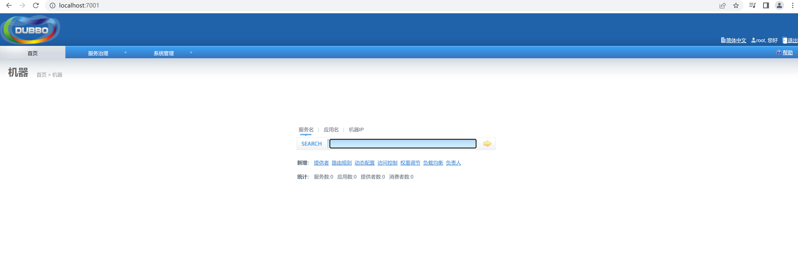
zookeeper：注册中心
dubbo-admin：是一个监控管理后台，查看我们注册了哪些服务，哪些服务被消费了
Dubbo：jar包
16.5 SpringBoot + Dubbo + zookeeper 16.5.1 框架搭建 1. 启动zookeeper ！
2. IDEA创建一个空项目；
3.创建一个模块，实现服务提供者：provider-server ， 选择web依赖即可
4.项目创建完毕，我们写一个服务，比如卖票的服务；
编写接口
1 2 3 4 5 package com.yang.service;public interface TicketService { public abstract String getTicket () ; }
编写实现类
1 2 3 4 5 6 7 8 package com.guo.provider.service;public class TicketServiceImpl implements TicketService { @Override public String getTicket () { return "dubbo_hello" ; } }
5.创建一个模块，实现服务消费者：consumer-server ， 选择web依赖即可
6.项目创建完毕，我们写一个服务，比如用户的服务；
编写service
1 2 3 4 5 package com.guo.consumer.service;public class UserService { }
16.5.2 服务提供者 1、将服务提供者注册到注册中心，我们需要整合Dubbo和zookeeper，所以需要导包
我们从dubbo官网进入github，看下方的帮助文档，找到dubbo-springboot，找到依赖包
1 2 3 4 5 6 <dependency > <groupId > org.apache.dubbo</groupId > <artifactId > dubbo-spring-boot-starter</artifactId > <version > 2.7.3</version > </dependency >
zookeeper的包我们去maven仓库下载，zkclient；
1 2 3 4 5 6 <dependency > <groupId > com.github.sgroschupf</groupId > <artifactId > zkclient</artifactId > <version > 0.1</version > </dependency >
【新版的坑】zookeeper及其依赖包，解决日志冲突，还需要剔除日志依赖；
1 2 3 4 5 6 7 8 9 10 11 12 13 14 15 16 17 18 19 20 21 22 23 <dependency > <groupId > org.apache.curator</groupId > <artifactId > curator-framework</artifactId > <version > 2.12.0</version > </dependency > <dependency > <groupId > org.apache.curator</groupId > <artifactId > curator-recipes</artifactId > <version > 2.12.0</version > </dependency > <dependency > <groupId > org.apache.zookeeper</groupId > <artifactId > zookeeper</artifactId > <version > 3.4.14</version > <exclusions > <exclusion > <groupId > org.slf4j</groupId > <artifactId > slf4j-log4j12</artifactId > </exclusion > </exclusions > </dependency >
2、在springboot配置文件中配置dubbo相关属性！
1 2 3 4 5 6 dubbo.application.name =provider-server dubbo.registry.address =zookeeper://127.0.0.1:2181 dubbo.scan.base-packages =com.guo.provider.service
3、在service的实现类中配置服务注解，发布服务！注意导包问题,因为这里的Service注解需要导入的是dubbo中的注解，而不是spring的注解,所以要把其注入就要用Componet，不过最新版本的好像已经解决这个问题：一个新的注解@DubboService
1 2 3 4 5 6 7 8 9 10 11 12 13 14 package com.yang.service;import org.apache.dubbo.config.annotation.Service;import org.springframework.stereotype.Component;@Service @Component public class TicketServiceImpl implements TicketService { @Override public String getTicket () { return "糟糕的一天" ; } }
逻辑理解 ：应用启动起来，dubbo就会扫描指定的包下带有@component注解的服务，将它发布在指定的注册中心中！
16.5.3 服务消费者 1.导入依赖，和之前的依赖一样；
1 2 3 4 5 6 7 8 9 10 11 12 13 14 15 16 17 18 19 20 21 22 23 24 25 26 27 28 29 30 31 32 33 34 35 36 37 <dependency > <groupId > org.apache.dubbo</groupId > <artifactId > dubbo-spring-boot-starter</artifactId > <version > 2.7.3</version > </dependency > <dependency > <groupId > com.github.sgroschupf</groupId > <artifactId > zkclient</artifactId > <version > 0.1</version > </dependency > <dependency > <groupId > org.apache.curator</groupId > <artifactId > curator-framework</artifactId > <version > 2.12.0</version > </dependency > <dependency > <groupId > org.apache.curator</groupId > <artifactId > curator-recipes</artifactId > <version > 2.12.0</version > </dependency > <dependency > <groupId > org.apache.zookeeper</groupId > <artifactId > zookeeper</artifactId > <version > 3.4.14</version > <exclusions > <exclusion > <groupId > org.slf4j</groupId > <artifactId > slf4j-log4j12</artifactId > </exclusion > </exclusions > </dependency >
2.配置参数
1 2 3 4 dubbo.application.name =consumer-server dubbo.registry.address =zookeeper://127.0.0.1:2181
3.本来正常步骤是需要将服务提供者的接口打包，然后用pom文件导入，我们这里使用简单的方式，直接将服务的接口拿过来，路径必须保证正确，即和服务提供者相同
4.完善消费者的服务类
1 2 3 4 5 6 7 8 9 10 11 12 13 14 15 16 17 package com.yang.service;import org.apache.dubbo.config.annotation.Reference;import org.springframework.stereotype.Service;@Service public class UserService { @Reference TicketService ticketService; public void buyTicket () { String ticket = ticketService.getTicket(); System.out.println("在注册中心拿到=>" +ticket); } }
5.测试类编写
1 2 3 4 5 6 7 8 9 10 11 12 13 14 15 @RunWith(SpringRunner.class) @SpringBootTest public class ConsumerServerApplicationTests { @Autowired UserService userService; @Test public void contextLoads () { userService.bugTicket(); } }
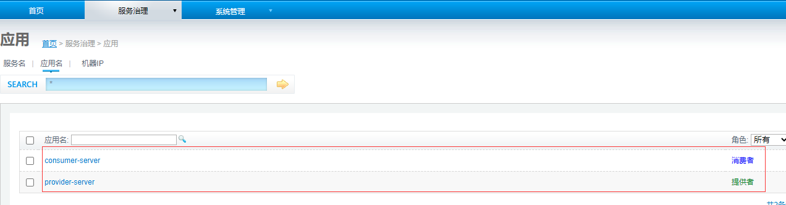
微服务架构问题：
分布式架构会遇到的四个核心问题：
1.这么多的服务，客户端该如何去访问？
解决方案：
SpringCloud，是一套生态，就是来解决以上分布式架构的四个问题
想使用SpringCloud，必须要掌握Springboot，因为它是基于SpirngBoot的
1.SpringCloud NetFlix，出了一套解决方案
2.Apcahe Dubbo zookeeper 第二套解决方案
API：没有，要么找第三方，要么自己实现
Dubbo是一个高性能的基于java实现的RPC通信框架
服务注册与发现，zookeeper，没有熔断机制，接住了Hystrix
3.SpringCloud Alibaba 一站式解决方案！